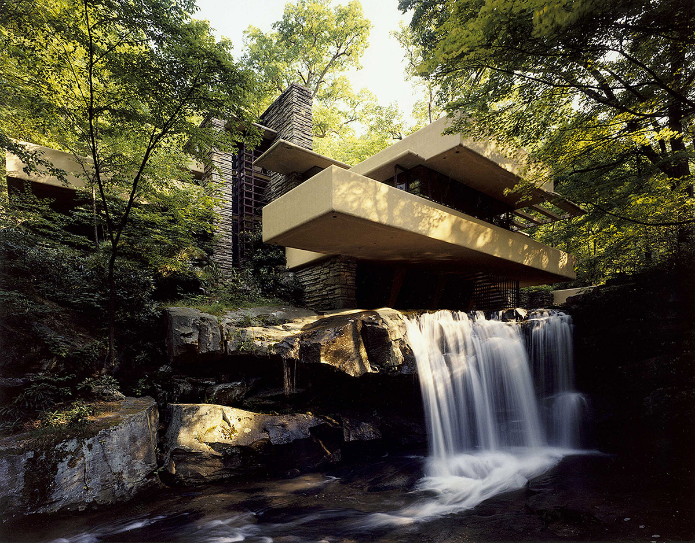
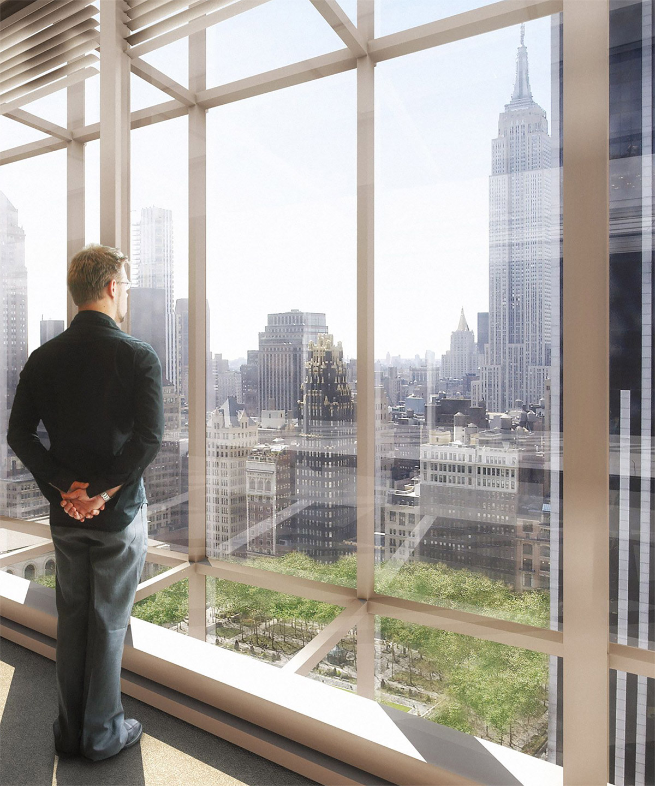
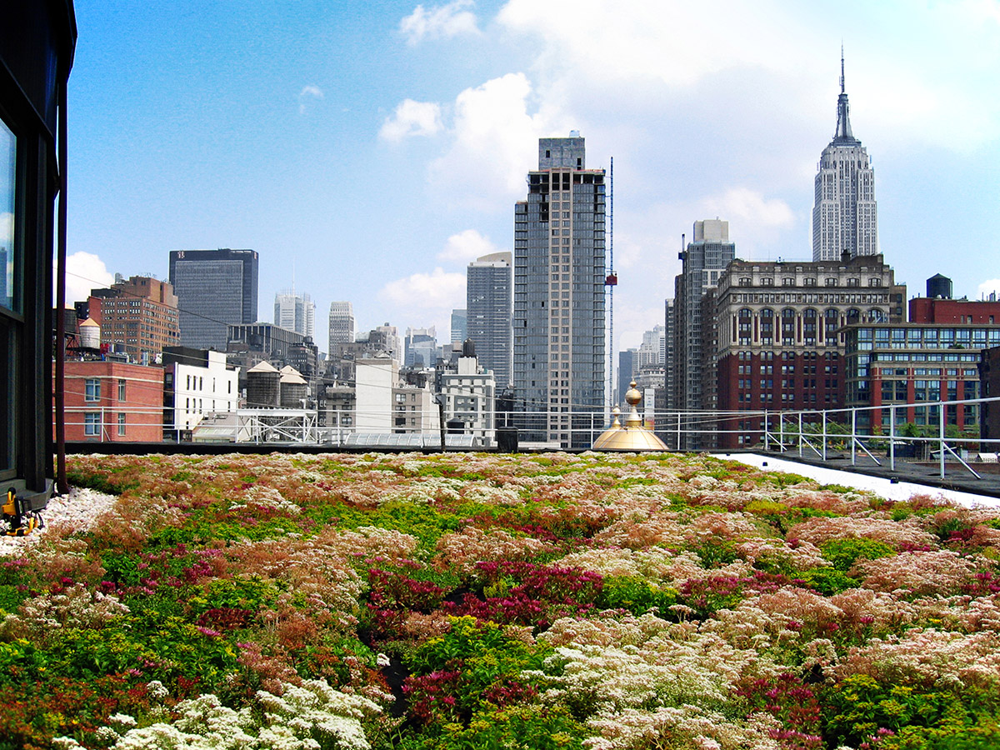
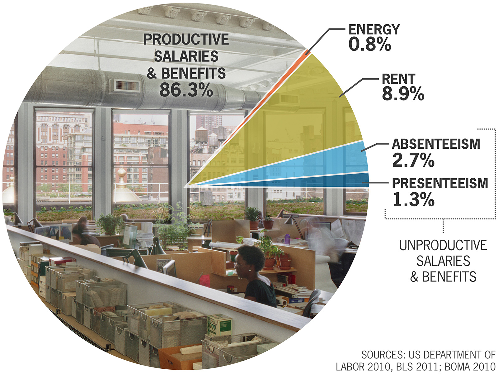
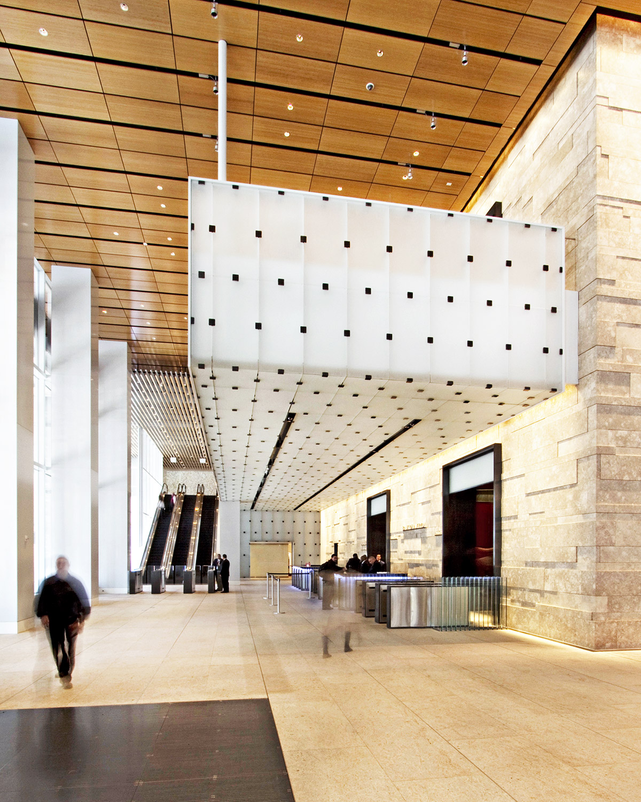
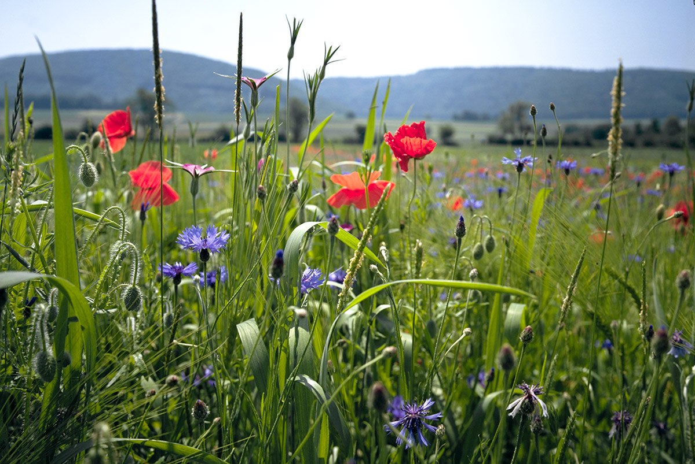
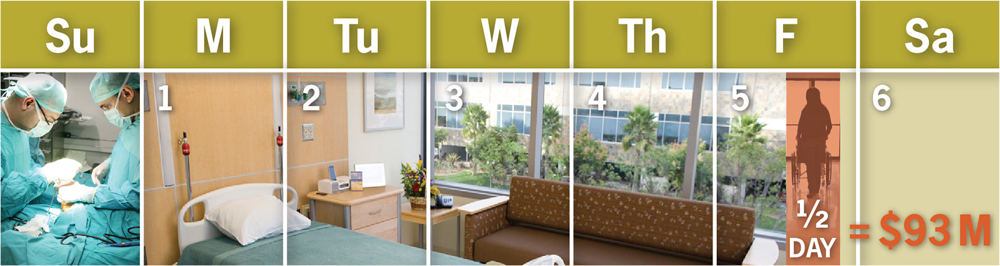
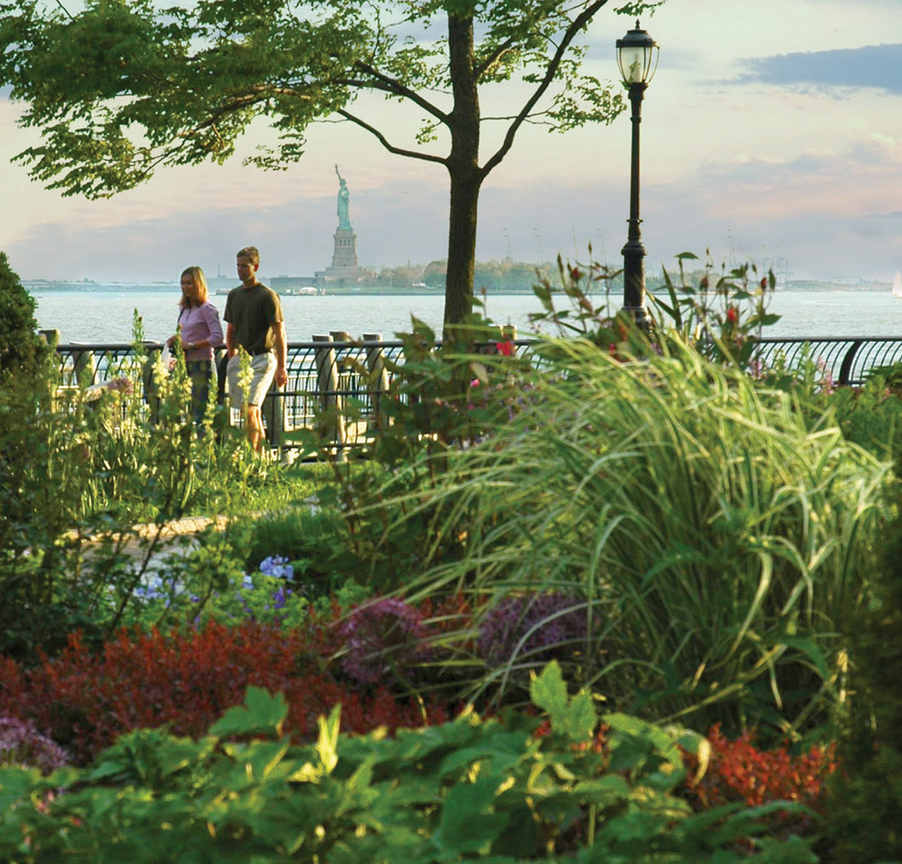
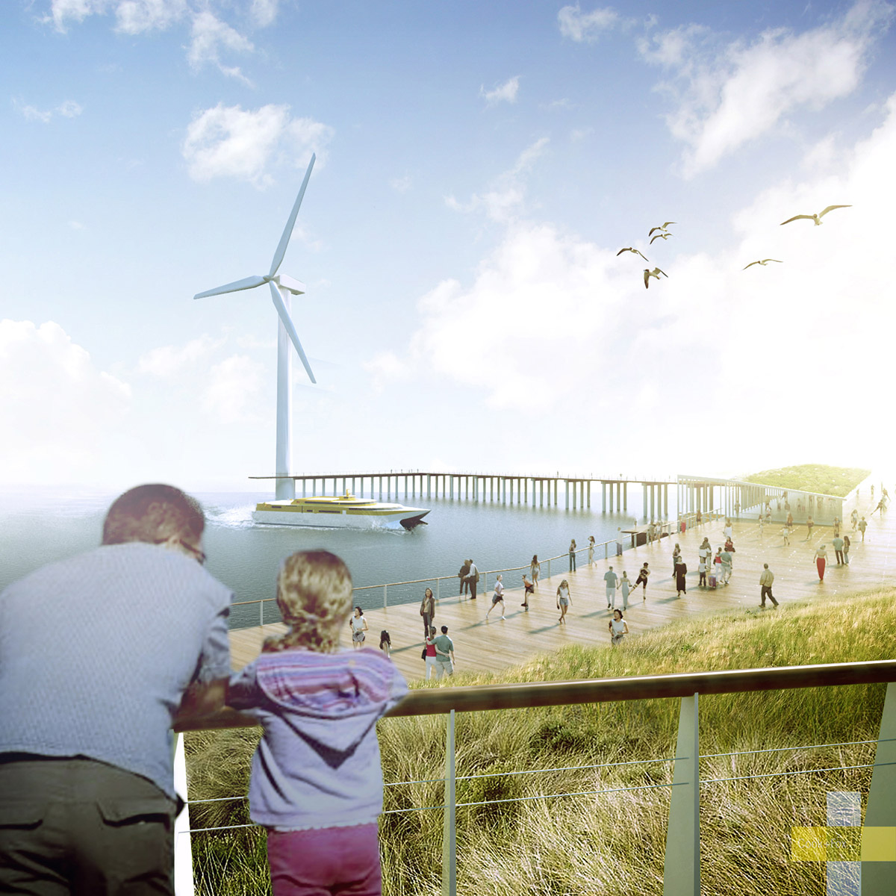
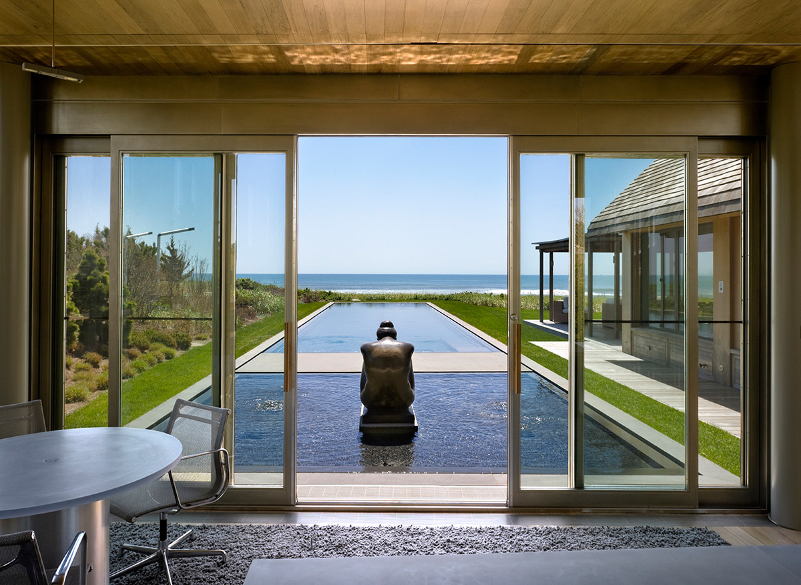

Biophilia, the innate human attraction to nature, is a concept that has been recognized for several decades by the scientific and design communities, and intuitively for hundreds of years by the population at large. Biophilic design has often been regarded as a luxury for property owners who want the best possible workplace for their employees, or who want to showcase their efforts to be more environmentally responsible. In reality, improving community well-being through biophilia can impact productivity costs and the bottom line.
Today productivity costs are 112 times greater than energy costs in the workplace. We believe that incorporating nature into the built environment is not just a luxury, but a sound economic investment in health and productivity, based on well-researched neurological and physiological evidence.
In this paper, we will share several examples of small investments involving very low or no up-front cost, such as providing employees access to plants, natural views, daylight, and other biophilic design elements. These measures provide very healthy returns. Integrating views to nature into an office space can save over $2,000 per employee per year in office costs, whereas over $93 million could be saved annually in healthcare costs as a result of providing patients with views to nature. These examples, based on scientific research, will serve to demonstrate the financial potential for a large-scale deployment of biophilic design. Whether it is hospitals that allow patients to heal more quickly, offices that boost productivity, schools that improve test scores, or retail outlets with higher sales, this paper makes the business case for incorporating biophilia into the places where we live and work.
Notes
Acknowledgements
The authors would like to thank the Peer Review Committee for their valuable contributions. The authors would also like to thank Olin Nettles for his proofreading assistance. The opinions and conclusions in this report are solely those of the authors and do not necessarily reflect the views of the reviewers.
Copyright and Commercial Use
This article is available to the general public without fee or other access control. Anyone may read this article or use it for their own personal or academic purposes. No commercial use of any kind is permitted unless specific permission is granted in writing in advance. The copyright of this article is by Terrapin Bright Green, LLC.
Peer Review Committee
Judith Heerwagen, J. H. Heerwagen & Associates; Vivian Loftness, Carnegie Mellon University Center for Building Performance & Diagnostics; Susan Painter, AC Martin Partners
Humans have traditionally improved the places in which we live and work to increase our comfort and productivity. These improvements have been based upon technological advancements that improved the health and welfare of building occupants, but have paid little attention to more subtle physiological needs. Recent advancement in our understanding of natural systems, coupled with a growing understanding of the subtle neurological and physiological functions associated with contact with nature, have allowed us to identify strategies to increase economic gains, improve productivity, and strengthen the social fabric of communities. Although the cognitive benefits of biophilia are well studied by the scientific community, the economic benefits of biophilic design accrued through implementing its many associated strategies remain an understudied element of producing the best designs for our built environment.

Photo courtesy of Figuura.
Emotional affiliations
Biophilia is the innately emotional affiliation of human beings to other living organisms. Life around us exceeds in complexity and beauty anything else humanity is ever likely to encounter. – E.O. Wilson, 1984.
In the last twenty years, studies examining the human attraction to nature have yielded convincing evidence that link interactions with nature with positive gains in productivity, increased healing rates, and even enhanced learning comprehension, in a wide range of sectors. These investments in health and productivity may affect more sectors than initially anticipated. The monetary gains from providing people access to biophilic design elements produces results ranging from remarkable sales boosts in retail stores, to taxpayer savings stemming from improved student test scores, to safer urban communities.
This paper presents to a general audience an argument in favor of biophilic design, by examining scientific studies of nature’s effect on productivity and human health in a variety of built environments, and assigning economic values to these outcomes in an effort to promote the large-scale deployment of biophilic design. The aim of this exercise is to show the economic value in paying attention to biophilic design, not just as a luxury, but as a way to improve profits. In order to understand the case for utilizing biophilic design, it is crucial to discuss how productivity, health, and well-being can be measured—ranging from reduced absenteeism to greater worker satisfaction—and translated into dollar savings. Our investigation into “human capital management” will provide the foundation to understand why society can no longer afford to ignore the value of nature. Highlighting specific case studies will then provide insight into how best management practices in biophilic design can render profit through smart yet simple natural design strategies.
Humans have evolved in the larger context of the natural environment, and we have developed to respond to these natural surroundings. In fact, our ancestors remained hunter-gatherers whose dwellings were seamlessly integrated into their natural surroundings until fairly recently in human development. As a result, our development has been entrained by sensory interactions with nature and familiarity with the spatial properties of various natural landscapes. In the age of the Industrial Revolution, a transformative shift towards urbanization, fabrication, and isolation from nature ushered in a departure from traditional agrarian practices and the active interaction with the natural world that accompanied them. More and more, workers became more familiar with the conveyor belt and the cubicle than with the characteristics of the natural world.
The term biophilia, stemming from the Greek roots meaning love of life, was coined by the social psychologist Erich Fromm. It came into use in the 1980s when Edward O. Wilson, an American biologist, realized the implications of this departure from nature and consequently pioneered a new school of thought focused on the need to bring humans back in contact with nature. “Biophilia,” Wilson described, “is the innately emotional affiliation of human beings to other living organisms.” He added, “Life around us exceeds in complexity and beauty anything else humanity is ever likely to encounter” (1. Wilson, 1984 ).
The concept of biophilia implies that humans hold a biological need for connection with nature on physical, mental, and social levels, and that this connection affects our personal well-being, productivity, and societal relationships. Whether one is engaging with nature by walking through a park, by interacting with animals, or simply by having a view of greenery from one’s home or place of work, biophilia has many applications that help transform mundane settings into stimulating environments.
Photo courtesy of Stephen Doyle.
Biophilia as a concept
The concept of biophilia implies that humans hold a biological need for connection with nature on physical, mental, and social levels and this connection affects our personal well-being, productivity, and societal relationships. – Sheeps Meadow, 2004.
Although the concept of biophilia is relatively straightforward to grasp, the neurological and physiological underpinnings and their impacts on the environment are critical for one to truly appreciate its value. The millions of neural channels in our brain link to the human body’s autonomic nervous system. This system consists of two elements: the sympathetic and the parasympathetic systems. The sympathetic system stimulates the human body when cognitive function is needed. The parasympathetic system serves to relax the body, and is used for internal processes such as digestion. When the body’s natural balance of sympathetic and parasympathetic is achieved, the body is in the ideal state of homeostasis. In chaotic and unsettling environments, the body’s sympathetic system is highly engaged in a “fight-or-flight” mindset. Concurrently, the parasympathetic system is suppressed, disrupting our natural balance and resulting in energy drain and mental fatigue. This combination induces stress, frustration, irritability, and distraction. In contrast, human interaction with nature provides an increase in parasympathetic activity resulting in better bodily function and reduced sympathetic activity. The result is decreased stress and irritability, and the increased ability to concentrate.
One of the many components of biophilia’s influence is the connection that humans have with certain fractal patterns that appear commonly in the natural world. Fractal patterns found in nature can positively affect human neural activity and parasympathetic system mechanisms. When subjects were shown images of fractal patterns in nature or townscapes of the built environment, electroencephalography (EEG) results reflecting neural and parasympathetic system reactions showed that subjects were more wakefully relaxed when exposed to natural landscapes. The study concluded that in environments with many stimuli and patterns, the patterns that are most likely to hold our attention and induce a relaxed response are fractal patterns commonly found in nature (2. Hagerhall, 2008 ).

Photo courtesy of Cook+Fox Architects.
We’re hardwired for it
Affective responses toward environmental settings are not mediated by cognition but stem from a rapid, automatic, and unconscious process by which environments are immediately liked or disliked... because of the hardwired emotional affiliation with certain natural elements, nature-based architecture can awaken fascination for natural forms – Joye, 2007 .
Neuroscientists have found that views of complex, dynamic natural scenes trigger many more interactions of the mu (opioid) receptors in the large rear portion of the visual cortex. Viewing nature is literally a pleasurable experience. Views with less visual richness, such as a blank wall or a tree-less street, are processed in the small forward portion of the visual cortex and trigger far fewer of the mu receptors, triggering less pleasurable mental reactions (3. Biederman & Vessel, 2006 ). In contrast, movement in a natural setting, such as waves, leaves in a breeze, fish swimming in an aquarium, or a flickering fire, capture and hold our attention.
Other physiological effects of exposure to nature are well documented. For example, the effects of walking through forest atmospheres versus urban areas have been documented by comparing the salivary cortisol, blood pressure, and heart rate of subjects. On average, salivary cortisol (a stress hormone) was 13.4-15.8% lower, pulse rate was reduced by 3.9-6.0%, and systolic blood pressure was lower in individuals who walked through the forest, compared with those who walked through urban areas. Most impressive, overall parasympathetic activity—which occurs when we feel relaxed— increased by 56.1%, whereas sympathetic activity—which occurs when we feel stressed—decreased by 19.4% in subjects who walked through the forest (4. Park, 2010 ). These studies support Kaplan and Kaplan’s Attention Restoration Theory (ART): that nature serves as a positive restorative environment for humans and is an effective platform for stress management, health promotion, psychotherapy, and disease deterrence.
Stress is a known cause of both mental health disorders and cardiovascular diseases. According to the World Health Organization, mental health disorders and cardiovascular diseases are expected to be the two prime contributing factors to illnesses worldwide by 2020 (WHO, 2008). Treatment for cardiovascular disorders account for $1 of every $6 spent on healthcare in America (5. CDC, 2011 ). If workers are faced with nowhere to relieve stress in the office, the premature onset of psychiatric, stress-induced, and anxiety-related illnesses can surface (6. CDC, 2011 ). Studies show that our ability to directly access nature can alleviate feelings of stress, thus bolstering the case for biophilia in the workplace (7. Grahn & Stigsdotter, 2010 ). Heartbeat has been measured in natural and urban environments in relation to spatially selective attention. After test subjects viewed videos of the two aforementioned environments, their heart beat interval results suggested that videos depicting natural environments had an involuntary relaxing effect on autonomic functions, inducing positive cardiac deceleration as well as beneficial physiological arousal (8. Laumann et al., 2003 ).
Photo courtesy of Bill Browning.
Biophilia & Phytoncides
In the forest, volatile and non-volatile compounds called phytoncides are emitted by plants. Inhaling these has proven to decrease blood pressure and stabilize autonomic nervous activity – Ohtsuka, 1998.
Another emerging field of research surrounding human interactions with nature, known as Shinrin-yoku in Japan, continues to provide solid evidence of the benefits of natural environments on human health. Shinrin-yoku is the ancient Japanese practice of restorative walks through natural settings, most often forests. In English, Shinrin-yoku directly translates to “forest bathing”. Forest bathing experiments were conducted among 87 non-insulin-dependent diabetics over the course of six years to test Shinrin-yoku’s ability to effectively decrease blood glucose levels in patients. After walking 3-6 kilometers in the forest, blood glucose levels dropped on average from 179 milligrams to 109 milligrams. To ensure that this was attributable to the forest environment, rather than simply the aerobic activity of walking, patients were also monitored while exercising on indoor treadmills and in indoor pools. Compared with these forms of exercise, which effectively reduced blood glucose levels by 21.2%, forest bathing decreased blood glucose by an impressive 39.7% (9. Ohtsuka, 1998 ). Within forests, human hormonal secretion and autonomic nervous functions are stabilized as we breathe in organic compounds called phytoncides excreted by the forest. New Shinrin-yoku studies show that inhaling these pungent compounds has tremendous health benefits that are difficult to reap in the urban and built environments that confine so many individuals today.
Our body’s response to daylight is another important clue as to how we can harness the power of biophilia. Daylight affects both our eye functions and our inherent circadian rhythms. Light therapy works by exposing the retina to specific wavelengths of light to treat imbalances of circadian rhythm—the daily cycle of hormonal activity observed in many living organisms. That balance is partially tied to the changing color of daylight over the course of a day. Morning light is yellow, becoming bluer in mid-day and shifting to red in the late afternoon. Exposure to natural light serves to balance our hormonal levels of serotonin (linked to our mood) and inhibit the production of melatonin (used to regulate sleep). When there is an imbalance of serotonin and melatonin in our bodies, our sleep-wake pattern is disturbed, which in turn inhibits our neurological and immune system functions. To enable our bodies to reach an optimal hormonal balance, natural daylighting provides the greatest amount of lux, or unit of luminance, and the specific wavelengths of light needed by the human body to establish and maintain the serotonin-melatonin balance. Sunlight on a clear day is 500 to 1,000 times greater than artificial lighting (10. Boyce, 2010 ). This is an important consideration while designing indoor environments to incorporate more natural light.
These explanations of nervous system activity in mankind provide some of the fundamental physiological value of biophilia. Unfortunately, most people are unaware of the neurological effects of nature deprivation as we interact less and less with nature on a daily basis due to the rise of a lifestyle led mainly indoors.
Frank Lloyd Wright’s design for the SC Johnson Wax building is reminiscent of a savanna forest, providing the same biophilic feeling of refuge that a real savanna would provide. The skillful use of nature of the space makes this building’s design particularly resonant, and is probably the reason that it has remained largely unchanged for the past 73 years. – Frank Lloyd Wright, SC Johnson Wax Building, 1936
Three pillar concepts serve as the tenets of biophilic design: Nature in the Space, Natural Analogues, and Nature of the Space. Nature in the Space refers to the incorporation of plants, water and animals into the built environment. Examples include potted plants, water features, aquariums, and courtyard gardens, as well as views to nature from the inside of a building. The prevalence of the courtyard in traditional architecture is a good example of our early attraction to incorporating nature directly into our built environment. These direct connections to nature—especially dynamic nature that incorporates movement— produce the strongest biophilic reactions.
Natural Analogues are one degree of separation away from true nature. Natural Analogues are materials and patterns that evoke nature and are characterized by four broad types: representational artwork, ornamentation, biomorphic forms, and the use of natural materials. Pictures of trees and water, building elements that mimic shells and leaves, furniture with organic rather than geometric shapes, and visible wood grain fall under the umbrella of natural analogues. The benefits of nature represented in artwork are measurable but less effective than benefits derived from actual trees or plants in the outdoors.
Nature of the Space, a similar concept, refers to the way humans respond psychologically and physiologically to different spatial configurations. As mankind developed in the savannas of Africa, our species’ existence among low-growing grasses, clusters of shade trees, and broad vistas have yielded a modern-day affinity for similar landscapes in indoor and outdoor environments (11. Kellert et al., 2008 ). In fact, our innate preference for open spaces does not extend to just any open space; physiological research indicates that our bodies react most positively to savanna-like settings with moderate to high depth and openness.
Spatial organization around us drives a major portion of our emotional and mental state. The design concepts of prospect and refuge—elevated views coupled with protected spaces—as well as enticement and peril—exploring unseen space and evoking pleasurable distress—are examples of Nature of the Space.
There is evidence that we are neurally predisposed to prefer vast, expansive views from a position of refuge. In a functional magnetic resonance imaging test (fMRI) that measured neural activity as a response to a variety of pictures, researchers found that subjects who were shown images of prospect from a point of refuge experienced the most fMRI activity in a part of the brain associated with pleasure. Moreover, the test results showed that natural settings were generally preferred to man-made environments. Anthropologists attribute this phenomenon to our evolutionary connection with nature, and the preference for views of prospect to the basic human need to find the best location for a camp or village (12. Biederman & Vessel, 2006 ).
Researchers have investigated and widely documented various physiological and psychological effects of exposure to nature. The results of these studies—spanning recovery rates of hospital patients through retail sales trends affected by daylighting—often express increases in emotional value. However, the economic benefits of reconnecting people to nature are often overlooked because of the difficulty of quantifying the variables associated with the positive outcomes. By assigning value to a variety of indictators influenced by biophilic design, the business case for biophilia proves that disregarding humans’ inclination towards nature is simultaneously denying potential for positive financial growth.
Over the last quarter century, case studies have documented the advantages of biophilic experiences, including improved stress recovery rates, lower blood pressure, improved cognitive functions, enhanced mental stamina and focus, decreased violence and criminal activity, elevated moods, and increased learning rates.
How do we take the evidence for these benefits and translate them to economics? In the past, research groups have reported various metrics of productivity including revenue, billable hours, net income, and market share gained. Current research uses both direct and indirect approaches.
Direct measures of productivity encompass quantifiable reported values, for example, the number of customers served or calls taken during a given time period. These metrics can be assigned monetary values in their respective settings and directly converted to cost savings for a company or institution. Indirect measures, although seemingly intangible and unquantifiable, are shown to have merit when examined in detail. Indirect measures of productivity include absenteeism, tardiness, hours worked, safety rule violations and other measures that add up quickly in a corporate budget (13. Miller, 2009 ). For this paper, indicators of productivity will include the following and will be translated into dollars where most applicable:
Illness and absenteeism
Staff retention
Job performance (mental stress/fatigue)
Healing rates
Classroom learning rates
Retail sales
Violence statistics
When linked to the effects of a renewed connection with nature, these metrics show remarkable gains, upon which companies and institutions can capitalize. This paper aims to showcase the economic value in paying attention to biophilic design, not just as a luxury, but as a way to improve profits. In the pursuit of maximizing efficiency while minimizing costs, emphasis on worker productivity is extremely undervalued, because productivity benefits are not always immediately apparent, whereas cost reduction strategies are directly identifiable. A quandary arises for decision-makers who are attempting to balance shareholder interests with operational dynamics (14. Heerwagen, 2000 ). An investment in employee workspace seems less fruitful than an investment in technology upgrades, where the rates of return are calculable. The myriad metrics that define worker productivity are rarely coordinated, making the payoff more difficult to quantify.
Industries spanning a variety of sectors—from hospitals to corporate offices—spend, on average, 112 times the amount of money on people as on energy costs in the workplace. This is precisely where the argument for biophilic design begins to pique the interest of business owners, superintendents, CEOs, policy-makers, and builders. Using 2009 values, the cost per square foot of a given corporate office space is overwhelmingly devoted to salary; 90.3% of costs per square foot are funneled towards salary, while only 8.9% is paid toward rent and mortgage, and 0.8% represents energy costs (15. BOMA, 2010, US Department of Labor, 2010 ).
These statistics make it clear that the smartest economic investment is an investment in employees, their productivity, and their overall satisfaction. Small improvements in productivity and reduced absenteeism could boost profits and the bottom line more dramatically than reducing energy costs. In short, productivity drives profit.
2. The Economic Advantages of Biophilia in Sectors of Society
In today’s society, sectors across industry are reaping the economic benefits of biophilic design. By examining five of these sectors—workplaces, healthcare, retail stores, schools, and communities—we can begin to understand the fiscal implications of biophilic design across the economy. The numbers and percentages presented reflect powerful evidence that many traditional design strategies that ignore nature can lead to negative impacts on human health, child development, community safety, and worker satisfaction. These effects translate directly to increased profits.
2.1 Driving Profit Margins in the Workplace Driving Driving Profit Margins in the Workplace
The workplace is the crux of progress in modern society; it is where the average US employee spends more than 43 hours per week (16. US Census Bureau, 2010 ). Professional and business employers pay their employees an average of $33.24 an hour or $67,880 per year—fifteen workers alone can cost an employer over $1 million in salary (17. Bureau of Labor Statistics, 2011a, 18. 2011b ). Employers hope their employees are productive every hour, but functioning at 100% efficiency is unlikely, given the built environment around workers and other external stimuli. The main causes for deficient productivity include absenteeism, loss of focus, negative mood, and poor health. The built environment, though not always the cause of these stressors, when well-designed, can be a reliever of these undesirable symptoms.
In the last decade, American psychologists have aggregated the five strongest requirements for basic functioning that, if neglected, can trigger worker comprehension problems and dissatisfaction in the office space (19. Kellert, 2008 ). These are:
Need for change (varying temperature, air, light, etc.)
Ability to act on the environment and see the effects
Meaningful stimuli (stagnant atmospheres cause an onset of chronic stress)
One’s own territory to provide safety, an identity, and protection
These fundamental needs can be met through biophilic design strategies in the workplace (20. Bergs, 2002 ). If implemented, the resulting profit margins contribute to the sustainable growth of successful businesses. One example of this is reducing absenteeism. Biophilic changes made to a workplace can reduce absenteeism over a long period of time, reduce complaints that drain human resource productivity, and help retain employees over many years.

Green roof at the offices of Cook+Fox Architects and Terrapin Bright Green, NYC, 2010. Photo courtesy of Cook+Fox Architects.
Predicting Absenteeism
Elzeyadi’s study at the University of Oregon found that 10% of employee absences could be attributed to architectural elements that did not connect with nature, and that a person’s view was the primary predictor of absenteeism. Features like green roofs can provide excellent views to nature even in commercial, urban settings.
Unnecessary and avoidable absenteeism should not be disregarded financially. In 2010, the US Department of Labor reported an annual absenteeism rate of 3% per employee—or 62.4 hours per year per employee lost—in the private sector. Therefore, an employer will lose $2,074 per employee per year to employee absences. Across twenty employees, the same company will lose over $41,000 in salary costs. The number is even more dramatic in the public sector. The reported average absentee rate for the public sector is 4%. With over 83 hours lost to absences per year, an employee’s absence costs $2,502 per year (21. US Department of Labor, 2010 ). In a large organization, this translates to millions of dollars lost to absenteeism. In all sectors, efforts to reduce absenteeism by even a fraction of a percent through the implementation of biophilic design can yield substantial financial benefits for an organization.
10% of employee absences can be attributed to architecture with no connection to nature
The potential for building design to cut human resources costs is highlighted by a recent study of an administrative office building at the University of Oregon (22. Elzeyadi, 2011 ). The building is an effective laboratory for testing the biophilia hypothesis: 30% of the offices overlook trees and a manicured landscape to the north and west, 31% overlook a street, building and parking lot to the south and east, and 39% of the offices are on the interior of the building, offering no outside view at all. The building occupants are a mix of administrative offices, with no hierarchical placement of departments or employees within the floor. When asked to rate scenes according to their preference, the building’s occupants heavily favored the vegetated views over the urban views, and either view over none at all. These preferences did not merely increase or decrease workers’ happiness; researchers found that the quality of employees’ view from their office significantly affected how they behaved at work.
Employees with the views of trees and landscape (north and west) took an average of 57 hours of sick leave per year, compared with 68 hours per year of sick leave taken by employees with no view. When placed on a continuum, employees with an urban view ranked between the other two groups, in terms of both preference of view and sick days taken. When view quality was combined with lighting quality and window area, architectural elements explained 10% of the variation in sick leave days taken. Furthermore, the study found the quality of a person’s view to be the primary predictor of absenteeism. The study also examined where people spent their breaks, and found that employees with better views were likely to spend more time at their desk. Employees with urban views or no views at all were more likely to spend their lunch breaks walking around or in another part of the building. These findings, taken together, indicate that people’s access to natural scenery is significantly correlated to their job satisfaction, health, and productivity.
Studies show that there is a marked difference in peoples’ reactions to natural scenes versus sterile office environments. In a test of 90 participants investigating heart rate recovery from low-level stress, three groups of 30 participants each were exposed to one of three conditions: a glass window with a view to nature, a plasma screen with a high-definition view of the same setting as the glass window, or a curtained wall. The restorative qualities of the view to nature were significantly higher than both the plasma screen and the curtained wall, both of which yielded equally low physiological recovery patterns. Once again, the results support Attention Restoration Theory (ART), suggesting that nature promotes recovery from mental fatigue. It appears that Nature in the Space enables better focus, mental stamina, and productivity—behaviors that benefit workers and employers alike (23. Kahn, 2008 ).
Furthermore, the results of this study highlight the importance of dynamic nature, such as moving water and trees swaying in the wind. Whereas static nature, such as potted indoor plants and artwork depicting natural scenes, is measurable and preferable to no exposure to nature at all, the benefits of dynamic nature elicit the most positive physiological responses. Movement in nature evokes associations across all human senses, rather than just visual stimulation. As a tenet of human psychology, we thrive on this sensory interaction with life. Thus, dynamic nature serves as the best strategy within biophilic design to provoke the optimal physiological response.

Biophilia can re-engage losses from unproductive operating costs More than 90% of a company’s operating costs are linked to human resources, and financial losses due to absenteeism and presenteeism account for 4%. Commercial spaces that give occupants access to nature serve as a release to outside stresses, and tend to cause less environmental stress themselves. It makes fiscal sense for companies to try to eliminate environmental stress that cost them thousands of dollars per year in employee costs.
The outcome of this study was not a coincidence; there exists a physiological connection between humans and nature that explains why human attention is neurologically restored. When individuals attempt to focus, there is a neurological restraint that instructs the brain not to be distracted or stimulated by other items or tasks—a function that requires a great deal of energy. Attentional fatigue results in environments where this focus is difficult to achieve, causing stress to slow the heart rate and breathing while simultaneously arousing digestion to raise energy levels. The combination induces lowered concentration and decreased effectiveness (24. Maas, 2011 ). This means that we get bored with visually unstimulating spaces, and, rather than being a distraction, nature serves as a source that renews our attention, reinstating cognitive functioning with natural elements that invoke affective responses.
The results of poor indoor environments also have financial implications in the form of “presenteeism.” Presenteeism describes the phenomenon in which workers clock in for work, but are mentally removed from the workplace, causing labor-related financial losses for the company. Presenteeism can result from sleepiness, headaches, colds, and asthmatic drain, if air supply is poor. Presenteeism costs employers in the private sector $938 and employers in the public sector $1,250, per employee per year. For a company with 100 employees, this equates to over $100,000 lost per year in unproductive time at work. Providing access to natural daylighting, outdoor views, and natural ventilation can reduce eyestrain, relieve mental fatigue and return workers’ attention to their work.
Although many studies have examined the effects of daylighting and views to the outdoors, the integration of plants and greenery into the workplace also results in productivity gains and reduced psychological stress (25. Bergs, 2002 ). Green space in an office increases productivity in a range of ways, and increased productivity has a significant impact on overall operating costs.

Bank of America Tower at One Bryant Park, NYC, 2010. Photo courtesy of Cook+Fox Architects.
Natural Analogues
The Bank of America Tower at One Bryant Park was designed with a focus on biophilia, with the express purpose of attracting and retaining the best employees. The building is extensively daylit, and incorporates natural materials such as wooden floors and ceiling designs, and stone details with a high fossil content.
Economically, the value of a view to nature has been quantified. Strategic seating arrangements at the Sacramento Municipal Utility District Call Center revealed surprisingly variable worker performance results (26. Heschong, 2003c ). The numbers of calls handled per hour by employees with seated access to views of vegetation through large windows from their cubicles far surpassed the number of calls handled per hour by employees with no view of the outdoors. Researchers concluded that those with views of nature handled calls 6-7% faster than those with no views. The value proposition was clear: With a large number of employees, profit margins grew significantly. Construction costs for the operable windows and the slight increase in square footage requirements (due to rearranging employees’ workstations to allow access to natural views) totaled $1,000 per employee, whereas the annual productivity savings averaged $2,990 per employee. The initial investment payback was achieved within 4 months, with long-term productivity improvements yielding increased profits. This is a benchmark any company could justify and feasibly achieve if this biophilic application were adopted (27. Heschong, 2003c ; 28. Loftness, 2008 ).
When deciding where to invest money internally within a company, the data shows that there is a comparative advantage to investing in the employees. A typical company of 1000 employees, with an average compensation cost per employee of $33.24 per hour, could increase its profits by $3.9 million annually just by increasing its productivity margin as little as 6%. If this company takes measures to retain employees, the cost of turnover for one position can be avoided. The costs of termination, replacement, and the loss in productivity equate to $1,000, $9,000, and $15,875 respectively per employee. This means that losing one employee due to dissatisfaction, illness, or poor work environment could cost the organization $25,875 on average (29. Loftness, 2007 ).
These new research results are shifting the trend toward better building design, using biophilia to revolutionize the way employers attract employees. Major companies, such as Herman Miller, use their lush landscape and green building to entice top candidate employees to join their organization; the Bank of America Tower at One Bryant Park in Manhattan was designed to ensure that 90% of all employees had views to parks, green roofs and/or rivers, specifically to create an iconic building with the explicit purpose of attracting and retaining the best employees.
Another comparative examination of an old office space characterized by poor lighting and air quality versus a healthy, brightly daylit office showed greater activation of hormonal stress in the former and significantly less headaches in the latter (30. Thayer et al., 2010 ). Because high levels of hormonal and cranial stress are strongly associated with advancing coronary heart disease—a disease that costs Americans over $108 billion a year— the physical environment of the workplace can play a role in better health in both short- and long-term situations.
In 1978, ING Bank directors shared a vision for their new 538,000 square foot headquarters in Amsterdam. The focus of the building design was to maximize natural lighting, integrate organic art, and install water features to enhance the productivity of its workers while also creating a new image for the bank. The productivity savings in this case were astounding: absenteeism decreased by 15% after construction was completed. Employees looked forward to coming to work and voluntarily tended to the natural features in the office (31. Romm & Browning, 1994 ). The bank additionally saved an estimated $2.6 million per year after all energy system and daylighting units were installed. Overall, ING’s image as a progressive and creative bank corresponded with the growth of users who decided to switch to ING as their primary bank, bumping it from the fourth most popular bank to the second most popular bank in the Netherlands (32. Romm & Browning, 1994 ).
These studies make it clear that businesses can benefit by capitalizing on nature’s free provisions.
2.2 Healthier Patients, Healthier Profits – Biophilic Design in Hospitals
Despite the downturn in the economy, spending in the healthcare sector is at an all-time high and is continuing to grow. In 2009, the United States spent almost $2.5 trillion on healthcare (33. US Department of Health and Human Services, 2009a ). The Office of the Actuary of Centers for Medicare and Medicaid Services anticipates this number to increase an additional 6.7% by 2017. Current research that demonstrates incorporating even the smallest elements of biophilia into the healthcare industry can reduce the cost of both patient care and staffing while improving medical outcomes.

Photo courtesy of G. Brändle, Agroscope.
Healing Views
Patients with a view to nature, instead of a nondescript wall, are more likely to experience hospital stays that are 8.5% shorter, with fewer negative observational comments from nurses, and significantly fewer strong, post-surgical analgesics. – Ulrich, 1984.
In 2010, the United States spent $40 billion on healthcare construction (34. US Department of Commerce, 2011 ). If biophilic design strategies, including gardens and access to daylight, are considered during the construction phase, the prospect exists to cut operational costs that compound over the span of a hospital’s life cycle. Over fifty studies have been published that associate biophilic elements as primary influences for faster recovery rates for patients, decreased dependency on medication, reduced staff and family stress, and improved emotional wellness as a result of natural daylighting and views to nature.
In 1984, Roger Ulrich pioneered a seminal study to measure the influence of natural and urban sceneries on patients recovering from gallbladder surgery. Some patients were provided with views to nature, whereas others looked at brick walls. With all other variables equal, his findings revealed accelerated recovery rates and reduced stress for the patients who had views of nature. On average, patients whose windows overlooked a scene of nature were released after 7.96 days, compared with the 8.71 days it took for patients whose views were of the hospital’s exterior walls to recover sufficiently to be released—a decrease of 8.5% (35. Ulrich, 1984 ). Breaking down this study into economic terms yields a significant cost reduction to the patient and the hospital at large. According to the Agency for Healthcare Research and Quality, the average expenditure per diem for a hospital stay after surgery in 2004 was $5,059 (36. Machlin & Carper, 2007 ). Applied to Ulrich’s study of 46 patients, the cost of patient care could have been reduced by over $161,000 if patients were released just one day sooner. While this is not a hard and fast calculation of cost savings, it speaks to the general magnitude of savings that a biophilically designed hospital might be able to achieve.
As providers attempt to reduce patients’ average length of stay in hospitals due to the rising per diem costs of inpatient care, biophilic design strategies serve as a catalyst and cost-effective method to achieve these savings. It is promising to imagine the overwhelmingly positive economic savings across the 5,795 hospitals in the country if each patient were given the opportunity to recover in rooms with views of nature (37. American Hospital Association, 2010 ). In 2007, 44,993 major operational procedures took place in the United States, resulting in hospital stays that averaged 4.8 days (38. Hall et al., 2010 ). In Ulrich’s study of patients recovering from gall bladder surgery, he found that a view to nature resulted in a hospital stay that was 8.5% shorter (39. Ulrich, 1984 ). If we apply this percentage to the 4.8 day hospital stay it normally takes to recover from major surgery, we estimate that the average length in hospital stay will decrease by roughly half a day (.41 days). Given that the national average expense per diem of a hospital stay after surgery is $5,059, and that the number of surgeries in the United States has remained relatively stable since 2007, we estimate that the nationwide savings per year due to reduced hospital stay associated with major surgery is $93,324,031 (40. Machlin & Carper, 2007 ). Again, the purpose of this calculation is not to pinpoint an exact industry cost savings, but rather to generate an idea of what the macroeconomic impacts of biophilic design are on the healthcare industry (See Appendix).
Other reports support Ulrich’s findings. A 1996 study conducted by Beauchemin and Hays found a decreased length of stay for patients in sunny, daylit rooms, when compared with those in dull rooms with artificial lighting (41. Beauchemin & Hays, 1996 ). In the study of 174 patients with bipolar disorder and depression, those staying in naturally daylit units were released after an average of 16.7 days, while patients in dully lit rooms stayed an average of 19.5 days; this was an average length of 2.6 days more for patients lacking access to natural light. A similar study conducted in 2001 found a mean stay that was 3.67 days shorter for bipolar patients in rooms with direct morning sunlight when compared with those who had none (42. Benedetti et al., 2001 ). Yet again, biophilic design strategies reveal opportunities for increased cost savings; pharmaeconomists at the University of Texas estimate that each case of treated bipolar disorder costs a minimum of $11,720 (43. Begley et al., 1998 ). If one applies this number to the context of the work of Benedetti et al., and if a fraction of this value was deducted because of reduced treatment time, $271,904 could have potentially been avoided had the other 87 patients in this study also been released earlier as a result of recovering in naturally lit rooms.

Natural views reduce the length of hospital stays, and save moneyReducing the average length of stay in hospitals by 0.41 days can amount to $93 million in reduced hospital costs every year. According to scientific studies, adequate access to daylighting and other biophilic elements can impact the health of patients in such a positive way that they can achieve and possibly go beyond these estimated savings. See the Appendix for further explanation of this calculation.
The cost of medication in America has skyrocketed in the last fifty years; the United States collectively spent $2.6 trillion in healthcare costs, which equals more than 17% of the nation’s GDP (44. U.S. Department of Health & Human Services, 2010 ). More money per person is spent on healthcare in the United States than in any other country (45. WHO, 2009 ). Reducing these costs is critical for the economic stability of the hospital system and its users. In 2005, a study assessed the significance of sunlight in a hospital room on patients’ recovery from a cholecystectomy, by measuring the quantity of analgesic medication and pain medication costs. The patients were divided into rooms with varying sunlight. Patients on the bright side were exposed to 46% higher sunlight intensity than those housed in dimmer rooms. The result of the study measured standard morphine equivalent, based on all opioid medication used postoperatively. The study determined that patients exposed to greater dosages of sunlight perceived less pain, took 22% less analgesic medications per hour, and accumulated 21% less in pain medication costs for the length of their stay (46. Walch et al., 2005 ).
Tending to the psychological needs of patients has understated economic benefits. Research results demonstrate that poor design and lack of exposure to nature inhibit recovery rates and blood pressure stabilization, exacerbate anxiety and increase administration of pain medications. Increases in stress in both patients and nursing staff arise when there is high responsibility (the responsibility of recovering, and the responsibility of patient well-being, respectively) and low control (inability to alter surroundings and the inability to take a break, respectively). Studies in horticulture therapy and healing gardens for patients have directly credited these activities with reducing patient and staff stress, reducing patient medication use, and increasing staff satisfaction (47. Sadler et al., 2008 ). There are many factors that influence and trigger stress, but the built environment can act as a stress reliever for outside stresses, as well as independently trigger positive physiological reactions. Thus, a biophilic built environment can provide positive distractions. Positive distractions also promote well-being by evoking positive feelings that hold attention away from bothersome thoughts. Other interventions include the presence of natural elements such as water, plants, trees, and non-threatening animals. Also, while not as impactful as dynamic types of nature, scenes of nature in artwork and murals have been shown to reduce anxiety and discomfort. Patients in a Swedish university hospital who were recovering from open heart surgery experienced the least post-operative anxiety when looking at pictures of natural scenes that included water, compared with pictures of abstract art, a control picture, or no picture at all (48. Ulrich & Lunden, 1990 ).
Healing gardens have repeatedly been found to evoke pleasurable memories, promote good health, and act as a place of social connectivity for patients. The benefits of nature in the hospital setting extend to family members and visitors as well; an overwhelming 95% of all people visiting inpatients, surveyed across four independent hospitals, reported feeling more relaxed, rejuvenated, and positive. They also reported feeling less stressed and more able to cope with the situation (49. Marcus & Barnes, 1995 ). The evidence-based design research and results have been so compelling that Naomi Sachs of the Therapeutic Landscapes Resource Center estimates that between 280-570 hospitals in America have incorporated large-scale healing gardens into their design layout to provide patients with a sense of control, physical movement, and access to nature as a positive distraction (50. Domke, 2008 ).
The benefits accrued from exposure to nature extend not only to patients, but are also significant for hospital staff, considering that the alertness of nurses in hospitals is crucial to the comfort and health of patients. Nurses and hospital staff feel the effects of anxiety, depression, and lower job satisfaction when they have limited access to views to nature or contact with the outdoors. Conversely, staff members recover from stress more easily and perform better when provided with access to gardens and sunlight.
Evidence suggests that natural light, access to nature, and views of nature should be incorporated into design for healthcare facilities. While there are initial upfront costs to this design, the payback is in quantifiable patient and staff benefits. Even though design in the healthcare field has only recently generated attention, conscientious scientific studies continue to support the integration of nature into hospital settings for patient wellness, increased profit margins, and reduced hospital budgets. Each of these health benefits has dual economic advantages that reflect the value of evidence-based biophilic design for hospitals.
In spite of the economic crisis in 2008, the average American spends $12,990 in retail settings per year. Biophilic design provides a way to tap into this $3.9 trillion market, to increase sales while providing a more enjoyable consumer experience (51. U.S. Census Bureau, 2010 ). The psychologically soothing and calming effect of nature has been used to draw shoppers into stores and boost sales, significantly improving profit margins for stores with biophilic elements compared to those without.
Retail customers judge businesses surrounded by nature and natural features to be worthy of prices up to 25% higher than businesses with no access to nature.
There is evidence that consumers are likely to buy more merchandise in stores with strategically situated natural vegetation. It is not a coincidence that store and mall layouts are mapped to intentionally and meticulously guide shoppers through a maze of products surrounded by strategically placed plants, trees, and skylights; small yet powerful influences over consumers can lead retail stakeholders to enjoy greater profits if biophilic greening practices are employed (52. Joye, 2010 ). Builders have capitalized on our innate affinity for the savanna-like environments of our early Homo sapien ancestors—with clustered trees, semi-open spaces, refuge from the sun, water features, multiple-view corridors, and high levels of visual access—and we see these increasingly in shopping malls across the country (53. Heerwagen, 1998 ).
In a consumer study of biophilic store designs, participants were shown photographs of retail environments and asked to measure the visual quality, place perception (judgment of products, product value, and merchant responsiveness), patronage behavior (frequency and duration of shopping actions), and price perceptions in three different types of shopping environments: green streets with high vegetation content, enclosed sidewalks with scattered greenery, and streets with no visible vegetation. The results were clear: well-tended streets with large trees received the highest preference ratings even though plants obscured some products and building facades (54. Wolf, 2005 ). Images of tidy business districts with no trees received the lowest scores. The place perception results revealed that consumers associated trees as attractive and appealing additions to their shopping experience and ranked these streets as well-maintained, friendlier, and more worthy of their dollars than the barren or enclosed sidewalk streets. Shoppers said they would stay longer once in a shop and would visit the business district more frequently—an accurate reflection of spending habits—when vegetation was heavily prevalent.
This same study reveals a compelling increase in the hedonic value of goods sold in greener areas versus retail locations that are devoid of nature. When shown images of greener retail settings, respondents indicated that an acceptable price to pay was 20% higher for an item in convenient shopping (e.g., a sandwich for lunch), 25% higher for general shopping (e.g., a new jacket or watch), and 15% more for specialty shopping (e.g., a gift for a family member) (55. Wolf, 2005 ). The addition of plant life into the realm of retail shopping appears to act as a stimulus that boosts the image perception and economic viability of stores.
Daylighting in the retail setting also offers an easy method for stores to dramatically boost their sales—simply by ensuring that natural light floods the retail floor space. In 1993, Wal-Mart consulted with a number of sustainable design firms and institutions in an effort to design a prototype green store. Wal-Mart sought to improve energy efficiency, enhance indoor air quality, address water conservation, and increase native landscaping. In one of their stores, only half of the store was daylit, but a remarkable result occurred in those daylit areas, according to Wal-Mart’s former Vice President for Real Estate Tom Seay. The sales per square foot were significantly higher for departments located in the daylit sections of stores. In addition, sales in daylit departments of this new store were markedly higher than sales in the same department in other non-daylit stores (56. Romm & Browning, 1994 ).
The most extensive study linking daylighting to retail sales was conducted from 1999-2001 in a chain of 73 retail stores throughout California; 24 stores were categorized as having significant daylight illumination, whereas the remaining 49 relied on artificial light. A thorough analysis of sales reports showed, with 99% statistical accuracy, that non-skylit stores experienced a 40% increase in gross sales after the installation of skylights. The profit associated with the resulting increase in sales due to daylit areas was estimated to be at least nineteen times greater than the energy savings. As energy costs for these stores were found to be $0.24 to $0.66 per square foot less than traditionally lit stores, depending on the complexity of the monitoring system installed, the profit from the sales increase, at $4.56 to $12.54 per square foot, far overshadows energy savings. The statewide effect for California if daylighting design was adopted on a mass scale in retail environments would be over $47.5 million in increased profits and $2.5 million saved per year in energy costs (57. Heschong, 2003a ).
The retail store business model across the country is starting to capitalize on daylighting to increase profits. Major corporations such as Target and Recreational Equipment Incorporated (REI) have adopted daylighting strategies for their stores. Built in 1998, Target’s entirely daylit store in Phoenix, Arizona covered its skylights for six months out of the year, operating by electric lights, to measure any difference in sales that might occur as a result of a difference in lighting quality. Unpublished estimates of sales increases show a 15-20% increase in sales in the six months where the store was lit only by daylight. This data was enough incentive for Target to open a similarly designed store in Turlock, California in 2000. This store experienced similar sales patterns in comparison with a non-daylit store (58. Edwards & Torcelli, 2002 ). To generalize the data, skylights statistically increase sales by $1.55 per square foot in grocery stores, clothing outlets, and retail chains across the country (59. Heschong, 2003a ). The addition of skylights alone translates to an annual sales boost ranging anywhere from $62,000 in a large grocery store to over $387,000 in a supercenter. Concurrently, stores implementing these strategies are also driving down their energy costs by installing light sensors that adjust artificial lighting depending on the amount of daylight.
By embracing the notion that daylighting and greenery can boost revenue in the retail industry, developers and storeowners have the opportunity to achieve optimal profit margins that are economically, environmentally, and socially savvy.
2.4 Better Futures for Schoolchildren – Biophilic Design in Educational Settings
Beyond cutting energy costs in schools, the education sector seems like an unlikely place to achieve major financial savings. The United States spends over $661 trillion on elementary and secondary education annually, with the cost of K-12 education averaging $10,249 per student (60. US Census Bureau, 2009 ). There must be room for improvement in this sector to ensure that each dollar spent guarantees the best educational success for our nation’s youth. In the effort to reduce the number of absences and enhance student performance, current research shows that classrooms can be strategically designed with biophilic elements to foster better test scores, optimal health, and increased learning rates. Furthermore, enabling children to play in schoolyards that provide access to nature has been shown to provide means of mental restoration, better behavior, and enhanced focus.
Children progressed through school curricula 20-26% faster when learning in daylit environments
The classroom is perhaps the most influential environment outside the home where young students will experience rapid brain development and expansion in social skills. It is critical to infuse these learning environments with as many positive attributes as possible. In a 1996 study on student performance in daylit schools, with optimal daylight allowance from south-facing roof monitors that controlled sunlight to all major occupied space, attendance was found to increase 3.2-3.8 days per year compared with attendance at non-daylit schools. The cumulative value for three days of school for the estimated 633 students in the school district amounted to $126,283 in tax dollars that were not wasted through student absences (61. Nicklas & Bailey, 1996 ).
Photo courtesy of Cook+Fox Architects.
Childhood Development
Nature is critical in children’s formative years. Studies show that nature provides children with a buffer against life’s stresses, and enables them to form social bonds. A study of daylighting in schools also showed that children learn 20-26% faster in natural daylight. – Wells & Evans, 2003; Heschong, 2003.
Student performance is another variable that can be influenced by biophilic principles. Across 17 studies from 1934-1997, experts agreed that good daylighting “improves tests scores, reduces off-task behavior, and plays a significant role in the achievement of students” (62. Kats, 2006 ). In the previous daylighting study by Nicklas and Bailey, test scores increased between 5-14%. The greatest indicator linking test score improvements to daylighting is the comparison with test score drops found in mobile classrooms in the same school district. The mobile, windowless classrooms saw test scores drop 17% in the same study period (63. Nicklas & Bailey, 1996 ). In the Capistrano, CA school district, students in classrooms with the most daylighting tested 7-18% higher than those with the least. Furthermore, these students also demonstrated a 20-26% faster learning rate (64. Heschong, 1999 ). The greatest improvements were seen in classrooms with both daylight and windows allowing direct views of nature.
The district’s small investment in the facilities to improve daylighting yielded test scores that increased dramatically compared to state averages. The facilities investment also saved on long-term operating costs through reduced energy consumption. The Heschong study estimates that the strategies of biophilia have statistically increased test scores by 5-18% and can continue to do so in schools across the country (65. Heschong, 1999 ). This is not at all meant to diminish the importance of educational improvements relating to the quality of curriculum and school resources themselves. This is merely to say that an important factor in the quality of a school environment is a child’s daily exposure to nature. Given its well-documented impact on academic performance, school systems should see this as an additional, viable option to improving childrens’ academic performance. An effective and holistic way to ensure that student function in the most productive environment possible is to integrate biophilia into academic and institutional building design standards, while also investing in stronger school curriculum.
Integrating biophilia into a range of improvements to the American school system would improve the experience of hundreds of thousands of children every year. According to The National Center of Secondary Education and Transition (NCSET), as well as a wealth of additional research, an improved school experience may increase the rate of school retention as students move through the education system, which in turn has economic implications for our national economy (66. Lehr et al., 2004 ). The NCSET estimates that a student who drops out of high school will earn $9,245 less per year than a high school graduate (67. Employment Policy Foundation, 2001 ). Furthermore, the Alliance for Excellent Education estimates that if the students who had dropped out of the class of 2007 had graduated high school, the national economy would have benefited from an additional $329 billion in income over their lifetimes (68. Alliance for Excellent Education, 2007 ).
Beyond daylighting in schools, exposure to nature has been found to impact the stress levels of society’s youngest members. As the built environment continues to encroach on expanses of nature, there are fewer and fewer opportunities for children to experience the outdoors. Despite this, children consistently prefer the outdoors; 96% of all children participating in a related study, who were asked to draw their favorite place, drew illustrations of an outdoor location (69. Moore, 1986 ). To test the theory that nature affects childhood development, rural school children in five communities in upstate New York, around age nine, were monitored to determine if nature acted as a buffer in psychological stress levels. To validate the findings, two dependent variables served to measure their stress levels: (1) parent observations of their child’s distress and (2) the child’s own self-worth report. After controlling for factors like socioeconomic status, the impact of life stress among the 337 children in the study was significantly less in children with high levels of nature nearby compared to those with comparatively low levels of nature nearby (70. Wells & Evans, 2003 ).
These studies show that nature serves as a protective environment for children. Nature supplies social support for children as they interact with others in shared natural spaces. Equally, if not more importantly, is that when children become engaged in nature, their neural mechanisms are allowed to rest and recover. Attentional restoration is critical for children. Without it, children will increasingly respond to distracting stimuli, experience greater loss of focus, and have difficulty managing daily tasks (71. Wells & Evans, 2003 ).
Students themselves are recognizing the need for more green space in their lives. In Brook Park in the Bronx, New York, teenage students continue to convert asphalt-laden space into urban planting areas. The students were motivated by the desire to have less costly access to fresh vegetables, as well as to have a safe space for social bonding. Over the course of a few months, the students were able to donate food to a pantry that feeds 500 people (72. Gonzalez, 2009 ). The garden continues to act as a promoter of well-being and social cohesion amongst students in the area.
Other similar transformations are occurring in New York. In conjunction with the PlaNYC 2030 initiative and the Trust for Public Land, students and faculty at P.S. 33 helped design Queens Village, a new playground available to the school’s 1,000 students and families. The formerly vacant lot provides a secure place for students to explore nature, use their imaginations, and receive their daily dosage of greenery (73. The Trust for Public Land, 2011 ).

Biophilic New York: An economic vision of a nature-filled future for New York City
The impacts of biophilia are diverse, and studies showing their benefits focus on disparate sectors of the economy. Fully incorporating biophilia into a city’s design, however, would concentrate these benefits and create powerful cumulative impacts. In New York City, green spaces are often shared amongst multiple users. Their impacts cross sectors and the density of users multiplies their effects. Imagine, for example, a green space sandwiched between a school and a hospital: a single space may allow daylight to penetrate into students’ classrooms, provide the community with a space for relaxing or exercising, and offer views of nature from hospital room windows. Incorporating green spaces into New York City’s design through green walls, pocket parks, daylighting strategies, and bringing nature into indoor spaces may have benefits far beyond what can be predicted by studies of individual impacts.
Extrapolating the proven impacts of biophilia to New York City’s economy provides a taste of the economic benefits we might expect to see in a future biophilic city. See the Appendix for complete explanations of how these numbers were derived.
Daylighting reduces student absenteeism. Providing adequate daylighting to all students in New York City public schools could re-engage $297 million in wasted taxpayer dollars and save $247.5 million in lost parental wages resulting from missed school.
Biophilic work environments increase office workers’ productivity. Creating biophilic work environments for many of New York City’s office workers would result in over $470 million in recouped productivity value.
Biophilic landscapes reduce crime. Biophilic landscapes throughout the city could save New York $1.7 billion in incarceration costs.
This sampling of economic impacts of biophilia in New York City adds up to over $2.7 billion per year in 2010 dollars. Though the cost of creating vegetated spaces can seem high, the enormous value of a biophilic city has the potential to outweigh the costs by far.
It is time to start relying on our affinity to nature to design schools that use biophilic standards to complement the efforts being made to improve educational curricula. The lessons from the healthcare and retail sectors show that their biophilic standards decrease costs while improving outcomes. Keeping children in school until they graduate and helping them to focus their attention on learning has immense benefits to society at large.
2.5 Property Value, Crime, and Well-Being – The Cost Benefits of Nature in Communities
Communities are economic webs consisting of homes, parks, transportation nodes, commercial spaces, and public buildings. The people in communities, both permanent and temporary, interact with and affect this ecosystem. When people are deprived access to nature and its many benefits, there are economic consequences—specifically in health and societal costs. Conversely, the added benefit to humans is calculable and substantial. Access to parks and views to nature within a community may be a cost-effective strategy to reduce the impact of our medical and social problems. To this end, we can quantify in dollars the importance of providing people with access to nature in the built environment and reveal the economic value of trees, parks, and other forms of nature in neighborhood design.
People will pay 58% more for property with a view to water or 127% more for a lakefront property
People are willing to pay more for good views of distance, views of water, and views of large trees. In a study in Cleveland, Ohio, good landscaping aesthetics coupled with large shade trees added an average of 7% to rental rates. Housing with landscapes rated as excellent were priced 4-5% higher than equivalent houses with poor landscaping (74. Laverne & Winson-Geideman, 2003 ). Comparisons of real estate prices in the Puget Sound region showed property value increases averaging 58.9% for homes with full views of the Sound, while partial views added about 30%. The greatest increase in value came from lakefront property, which added a value of 127% (75. Benson et al., 1998 ). This is not an uncommon trend in the real estate market. People are willing to pay for nature, validating its consideration during a project’s design phase.
Cities around the world are recognizing the importance of biophilia in the form of access to park space and gardens. Singapore’s economic growth is astounding as its population has doubled to more than 5 million in the last 25 years. In that same time period, Singapore devised a Green Plan aimed at luring investment into the area. In the process, its green coverage on rooftops and in parks has increased from slightly greater than one-third of the city’s area to almost one half the entire area of Singapore (76. Kolesnikov-Jessop, 2011 ). The city’s 10-year development plan seeks to transform and revitalize Singapore from being the “Garden City” to the international “City in a Garden”, while simultaneously becoming a leader in the economic market. Experts anticipate Singapore will expand as a global hub for innovation, markets, business, and entrepreneurs (77. Ministry of National Development, Singapore, 2011 ). Singapore is catching hold of a revolutionary concept as they continue to identify greenery as part of a strategy to lure investment, and drive economic growth that concurrently increases quality of life and delivers more business to the city every year.
Children with ADHD who take a 20-minute walk through a park are likely to exhibit significantly better concentration than by doing the same in a downtown area. Nature has major implications for the way we treat ADHD. – Taylor & Kuo, 2009.
The Trust for Public Land conducted an analysis in 2003 to quantify the economic benefits of access to nature in the form of parks in cities. The team identified several overarching factors that reinforce the economic importance of encouraging individuals to interact with nature through parks. The factors examined included property value (also referred to as “hedonic value,” or the increased property value associated with proximity to parks), tourism (visits to city parks that drive collective wealth), direct use (recreational opportunities within parks), health (savings in medical costs due to physical activity), community cohesion (avoidance of antisocial problems), and other factors linked to savings from clean air and water. Each of these factors provided a different type of insight into the economic importance of interactions with nature (78. Harnik & Welle, 2009 ).
In Washington, D.C., researchers estimated a 5% premium on those properties within 500 feet of a park.
After collecting data on the number of park users in Sacramento, California and determining the average difference in medical costs between active and inactive persons, the city estimated an annual savings of $19.8 million as a result of access to park space.
Access to natural environments positively affects a range of issues, from economic benefits to community cohesion. Neighborhood layouts have the ability to alienate or integrate its social fabric. While this sort of “social capital” cannot be quantified directly in economic terms, a study showed the financial value of park supporters by summing financial contributions and the dollar value of volunteer hours, which in Philadelphia with its abundant park space yielded a community cohesion value of $8.6 million (79. Harnik & Welle, 2009 ).
Access to nature has significant influence over the actions and social behavior of communities. Cognitive studies have shed light on the benefits of interactions with nature, such as reduced hostility among prison inmates after participating in gardening projects and fewer reports of mental anguish for poverty-stressed, inner-city residents. Nature’s calming influence even reduces mental fatigue and outbursts of anger. To test this notion, Kuo and Sullivan conducted a study of 145 urban public housing residents with varying proximity to spaces of nature. Space ranged from green (ample trees) to barren (no visible trees). Levels of mental fatigue were compared using Digit Spin Backwards (DSB) tests, which attribute inability to concentrate to mental fatigue. Residents living in green settings demonstrated higher scores in attention span and reliability. Furthermore, the results of the study found that some types of domestic violence were 25% less prevalent in the greener housing developments compared to the barren housing cluster (80. Kuo & Sullivan, 2001a ).
Another 2001 study by Kuo and Sullivan measured the difference in crime rates over a two year period, in a large public housing development in urban Chicago. A section of buildings that was surrounded by greenery was compared with another that was devoid of surrounding nature. The study reported 52% fewer felonies in the greener buildings, 7-8 % of which could be linked to increased access to nature (81. Kuo & Sullivan, 2001b ). Applied across Chicago’s 12 family-aimed public housing developments, assuming that the rates of crime remain fairly consistent across each development, and assuming that each of these felonies resulted in arrest and incarceration, we estimate that this results in a rough savings of $162,200 to the Illinois Department of Corrections each year (82. Chicago Housing Authority 2011, Durose & Langan, 2003 ). This number, as with all of our other estimates, is intended merely as a rough estimate of the cost-savings attributable to biophilic design. It also takes into consideration only reduced crime, and does not consider the myriad other health and operational benefits of biophilic design (See Appendix).
Graphics credit: Catie Ryan for Terrapin Bright Green.
Biophilia can reduce medical expenditure
Exposure to nature could be used as a way to minimize symptoms of ADD and ADHD in children. This could result in reduced consumption of ADD and ADHD medication. A 10% reduction in spending on this medication amounts to around $228 million annually in savings to American families (see Appendix for further information).
As an observation separate from the statistical analysis of the Kuo and Sullivan study, housing developments with large trees have been found to attract people to be outdoors, talk with neighbors, and develop stronger social bonds (83. Heerwagen, 2006 ). The conclusions from these studies provide possible interventions for reducing aggression and violence in the inner city. From a community standpoint, the amount of substantiated evidence linking decreased conflictive behavior with the integration of greenery and vegetation in communities shows that it is worthwhile, both economically and socially, to incorporate biophilia into urban design.
Recent studies have also linked walks in community park spaces with a reduction in the behavioral symptoms of ADHD. In 2009, 16 children, all diagnosed with either ADD or ADHD, were exposed to three settings with varying degrees of greenery: a park setting (most greenery), a neighborhood street (modest greenery), and a downtown area (no greenery). Based on the level of “green dosage” provided to the children, the children experienced significantly greater ability to concentrate and greater positive attention rates after walking in the park compared with the other two environments. This suggests that exposing children with attention deficits to a natural environment can substantially enhance their attention performance (84. Taylor & Kuo, 2009 ). There are 5.2 million children in America diagnosed with ADHD, and $2.28 billion is spent on ADHD medication alone. In fact, the average family that purchases ADHD medication pays $25-109 per month for it (85. Scheffler et al., 2007 ). If providing children access to parks and nature within a community reduced the medication intake by a conservative 10%, families nationwide could save a cumulative $228 million in ADHD medication in 2004 numbers. Considering that Scheffler et al. have measured an annual growth rate in expenditures on ADHD medication of 22.6%, the savings resulting from a reduced consumption will increase proportionally as well (See Appendix).
Outdoor activities rather than drug prescriptions have also been identified as a means of treatment for obesity through the Park Prescriptions program suggested by the Institute at the Golden Gate. Their Park Prescriptions report states that 10% of the nation’s medical costs, or $150 billion, is attributed directly to obesity, and that $2,200 per person per year can be reduced if sedentary individuals become more physically active three or more days per week (86. Institute at the Golden Gate, 2010 ). Another study that used a cost-of-illness approach to attribute medical and pharmacy costs for specific diseases to physical inactivity across members of Blue Cross Blue Shield of Minnesota estimates that total health plan expenditures attributable to physical inactivity were $83.6 million for the year 2000 alone (87. Garrett et al., 2004 ).

Image courtesy of Cook+Fox Architects
Nature affects health
The benefits of biophilia include improved stress recovery rates, lower blood pressure, improved cognitive functions, enhanced mental stamina and focus, decreased violence and criminal activity, elevated moods, and increased learning rates. – Joye, 2007.
There is also evidence that teenage girls develop better when they have views to nature from their homes. In a study of self-discipline in teenage girls, those with green space immediately outside their homes demonstrated more self-discipline than those without, by a margin of 20%. Self-discipline was measured as a function of concentrating, inhibiting initial impulses, and delaying gratification (88. Taylor et al., 2001 ). Mastery of these personal skills often results in higher rates of professional, academic and personal success. As budgets across the country are cut for inner-city landscaping, children are deprived of resources that develop their self-discipline and meet their psychological needs.
Integration of green space into urban design cultivates a society that is more aware and invested in a long-term shift toward generations that are healthier, more productive, and more connected to nature. This shift could be manifested in an increase in the agency of marginalized or overlooked sections of the future labor force. Another way of addressing this could be a change in the structure of the real estate landscape. Recognizing the premiums that green properties generate could change building codes and best practices in construction in the long run, resulting in urban areas that move towards reconnecting with the native landscape. The fact that these kinds of changes are already used, to highly positive effect, in cities like Singapore, should encourage governments, urban designers, developers and architects to follow their lead.
Humans have evolved and progressed alongside nature and its systems. Because of this, the human mind and body function with improved efficiency when natural elements are present. Biophilic design optimizes productivity, healing time, learning functions, and community cohesion as the perfect partnering mechanism for business vendors, hospital owners, school administrators, contractors, and city planners alike who are seeking to reap maximal value through development and design.
The benefits of biophilia span many sectors. From the evidence presented, biophilic elements show productivity increases among staff when provided with nature in the workplace, with economic benefits ranging from $1,000 per employee to $3.6 million company-wide.

Photo courtesy of Cook+Fox Architects.
In this image, the view to the distance provides a sense of prospect, while the built enclosure provides refuge. The water’s reflection and the abundant daylight provide exposure to nature. This scene is an example of good biophilic design that facilitates an interaction between natural elements, natural materials, spatial characteristics and the occupant’s sensory experience.
In the $2.5 trillion healthcare industry, simply increasing views from hospital beds to nature could yield over $93 million in annual savings nationwide as patients require less time in the hospital to recover from major surgery. The significant nationwide healthcare savings in recovery from these surgeries alone indicates that testing the effects of biophilia in other areas of healthcare is a worthwhile and potentially lucrative endeavor. Retail shops with natural greenery and daylighting consistently yield higher profit margins than their dim counterparts, offering a 12% competitive advantage for shops with more greenery and 40% for quality daylighting. Children, the most vulnerable yet influential members of society, have been found to improve their test scores by 7-26% and have fewer absences from school when they are given access to daylighting. The network of communities that span the United States can economically benefit from the presence of nature, from reduced crime levels to the reduced need for medication among members of the community.
Recent research from neuroscience and endocrinology show the crucial role that experiencing nature has for our physiological well-being. Implementing biophilic design into our workplaces, healthcare system, educational environments and communities is not just a nice amenity. It has profound economic benefits. It is now imperative that we bring nature into our built environment.
New York City schools currently report a 90.5% daily attendance rate (89. Mayor’s Management Report, FY2011 ). This translates to a 9.5% absence rate on a daily basis. With 1.1 million students in NYC public schools and a 180-day school year (90. NYC DOE ), this means that there is a total of 19,332,500 absences per year. The operating budget for the New York City Department of Education is currently $19.2 billion. Dividing the operating budget by the total number of students and the number of school days, we calculated a rough cost to taxpayers of each day of school at about $94 per student per day. Rounding down to $90 to be conservative, we multiplied the cost of 1 day of school for one student by the number of annual absences, and found that $1.7 billion of taxpayer money is wasted each year on missed school. Students in daylit schools have been shown be absent from school three fewer times per year than students in schools without proper daylighting (91. Nicklas & Bailey, 1996 ). We multiplied the cost of one day of missed school by the three reduced absences observed in students in daylit schools to estimate that $297 million in taxpayer money would be re-engaged if New York City were to provide daylighting in all schools, and thus achieve 3 fewer absences per student. Additionally, we estimated that $247.5 million would be saved by reducing the number of lost parental wages because of student absenteeism. We used the US EPA’s estimate that an average of $75 in parental wages is lost for a student absence from school (92. EPA, 2011 ). This estimate assumes that a woman’s wages (which are on average lower than a man’s) will be lost, and accounts for the portion of the population with a stay-at-home parent that would not lose wages because of a school absence. Multiplying by 3 fewer absences assumed to result from daylighting in schools and by 1.1 million students, we calculated that $247.5 million in lost parental wages could be saved by providing daylit school environments.
Studies have shown that living near vegetated landscapes can result in the reduction of crime rates by 7% (93. Kuo & Sullivan, 2001b ). In New York City, about 105,000 felonies are committed per year (94. 105,496 felonies were reported in the Mayor’s Management Report, FY2011 ). We assumed a median sentence of 3 years for felonies based on a national average (95. Durose & Langan, 2003 ), and a cost of incarceration in NYC per inmate per year of $80,354 (96. Mayor’s Management Report, FY2011 ). With a 7% reduction in felonies due to biophilic landscapes, we estimated that a resulting reduction in the number of felonies committed in New York City by 7% could save $1.7 billion in incarceration costs.
New York City’s Gross City Product (NYC GCP) is about $540 billion annually (97. New York City At-A-Glance, 2011 Update ). Of that amount, we estimated the amount that is produced by workers in office environments. We assumed that workers in the finance, insurance, real estate, information, and other professional and business services categories generally work in office buildings. Those categories of the NYC GCP add up to approximately $157 billion. While a small number of the salaries earned in those sectors may not be in office environments, this estimate is almost certainly a low estimate of the portion of the city’s salaries earned in offices, as we left out all employees in the health care sector, government, and other categories that employ many people in offices. Private firms experience an absenteeism rate of about 3% (98. US Department of Labor, 2010 ). Multiplying by our conservative estimate of the portion of NYC GCP earned in office environments, we calculated that the lost productivity value of absent employees who work in office buildings in New York City is about $4.7 billion. Studies have shown that biophilic work environments can reduce about 10% of workers’ absenteeism (99. Elzeyadi, 2011 ). Therefore, biophilic work environments could help New York City recoup $470 million in reduced absenteeism.
B. Cost Savings Due to Biophilic Hospital Recovery Rooms
United States hospitals could benefit enormously from biophilic design. To roughly estimate the extent of these savings, Terrapin Bright Green sought to calculate what the rough nationwide benefit would be if more hospitals were designed to give patients a view to nature. The National Health Statistics Report’s “National Hospital Discharge Survey: 2007 Summary” cites 44,993 procedures for hospital discharges in the United States. All of these discharges were from short-stay, nonfederal hospitals, and exclude newborn infants. Each of these procedures resulted in a hospital stay that averaged 4.8 days (100. Hall et al., 2010 ).
In Ulrich’s 1984 study, a view out of a recovery room window to nature resulted in an 8.5% shorter hospital stay. Using this proportion, 8.5% of the 4.8-day average in-patient stay is .41 days (almost half a day). We estimate that if all recovering inpatients were given access to a view out of a window to nature, the average hospital stay would be 4.39 days, or half a day earlier. The average expense per diem of inpatient care after surgery is $5,059 (101. Machlin & Carper, 2007 ). Based on these numbers, the savings calculations associated with providing inpatients recovering from surgery a view to nature are as follows.
To find the average post-surgery cost of a hospital stay per patient, we multiplied the average expense per diem of inpatient care by the length of the 4.8-day average stay. This means that hospitals pay $24,283.20 per patient for post-surgery hospital stays. If we apply the results of the Ulrich study to this scenario, and assume that providing a view to nature out of a hospital recovery room window reduces the patient’s stay by .41 days (or 8.5%), then providing this view will result in an average post-surgery hospital stay that costs $22,209.01 ($5,059 per night x 4.39 days = $22,209.01).
Table 1
Violent Crimes
Property Crimes
High Vegetation
4.0
3.3
Low Vegetation
1.9
1.8
The difference between the average cost of an inpatient stay and the same cost to a biophilically designed hospital is $2,074.19. To apply this cost savings nationwide, we multiplied this per-patient savings by the 44,993 comparable operational procedures that happen every year in the US, the national savings would be $93,324,030 if every one of these patients had recovered with a view to nature.
Although this calculation assumes that all non-federal hospitals in the United States do not integrate biophilia into their design, we assume that the number of hospitals that do not adhere to this rule are small enough to be included in a margin of error. This calculation was not meant to be used as a precise calculation of nationwide savings, but a rough estimation of what could be if hospital recovery rooms were designed to give patients access to nature.
C. Reduced Prison Costs Due to biophilic Public Housing Developments in Chicago
Frances Kuo and William Sullivan’s 2001 study on crime rates in inner cities accounts for a 7-8% reduction in violent and property crimes as a result of greener surroundings in Chicago’s Ida B. Wells Public Housing Development. This is a valuable clue as to what an increase in biophilic design in public housing developments would do when scaled up over an entire city. Since the data provided by Kuo and Sullivan dealt with Chicago, this paper will scale up the resulting reduction in crime over the City of Chicago. Chicago has 12 other public housing developments aimed at families, and 41 more housing developments aimed at senior citizens (102. Chicago Housing Authority, 2011 ). Assuming that we could only compare the Ida B. Wells Houses to other developments aimed at families, we focused on these 12 housing developments.
Part of the assumptions of this calculation was that the crime rates across Chicago’s 12 family-aimed public housing developments are comparable to the crime rates at Ida B. Wells. We also assumed that the layout was comparable, and that none of them already incorporate biophilic design to any significant extent. The Kuo and Sullivan study quotes a 52% decrease in total crimes, or a reduction in buildings that had high levels of vegetation, compared to buildings that had low levels of vegetation, over a two year period, in Chicago’s Ida B. Wells houses (103. Kuo & Sullivan, 2001b ). The results of the study attribute 7-8% of this decrease to vegetation. The number of crimes are detailed in Table 1.
The difference between the crime in high vegetation and low vegetation is 2.1 violent crimes and 1.5 property crimes. We than halve these numbers, since they were measured over a 2-year period. Since 8% of the reduction in crime is attributable to vegetation, we can say that .084 violent crimes and .06 property crimes are attributable to vegetation.
We multiply the above numbers by 12 to scale them up to the 12 public housing developments in question, and arrive at 1.008 instances of violent crime and .72 instances of property crime.
We must assume for this calculation that each reported crime resulted in arrest and incarceration. We know that the average annual cost of incarceration in a state prison is $22,650, and that the average length of incarceration in state prisons for violent crime is 5.5 years, while the average length of incarceration in state prisons for property crime is 2.25 years (104. Durose & Langan, 2003 ).
Table 2
Violent Crimes
Property Crimes
Crime reduction due to greenery
1.008
0.72
Total length of incarceration
5.544
1.62
Total cost of incarceration
$125,571
$36,693
We then multiply the number of crimes in Chicago by the length of each type of incarceration and the cost of incarceration (see Table 2). When we add the total costs of incarceration for violent and property crimes, we get $162,264.60.
Based on our assumptions, we roughly estimate that if all of Chicago’s 12 public housing units were designed with access to nature, the Illinois State Department of Corrections would save $162,264.60 every year, solely due to reduced crime. This figure does not consider the reduced operating costs of buildings that incorporate natural daylight and ventilation systems, or the savings resulting from myriad other health benefits that access to nature bring.
Studies show that giving children access to nature improves their concentration and enhances their rate of learning. Tayler & Kuo suggest that this could one day become a method of preventing the symptoms of ADHD. For the purposes of this paper, we thought it was valuable to calculate a rough estimate of the nationwide savings that result from reduced consumption of ADHD medications.
A paper by Scheffler et al. cites that in 2004, global expenditure on ADHD medication was US $2.4 billion, and that 95%, or US $2.28 billion, of this can be attributed to the United States. A 2009 study of children with ADHD found that children with ADHD scored 13.37% higher on tests measuring their concentration after a walk in the park than after a walk through a downtown area (105. Taylor & Kuo, 2009 ). Based on this improvement in score, we assume that a nationwide trend towards increased access to parks for children with ADHD could reduce the average consumption of ADHD medications by 10% (reduced from 13.37% to be conservative). Based on 2004 numbers, this translates to an annual savings of $228 million on ADHD medication expenditure. This figure does not take into consideration that Scheffler et al. predict an increase in expenditure on ADHD medication of 22.6% every year in the U.S. alone, which means that the expenditure on these medications (and therefore potential savings) are significantly higher today.
Beauchemin, Kathleen M. and Peter Hays. “Sunny hospital rooms expedite recovery.” Elsevier Science Ltd., Journal of Affective Disorders 40: 49-51. Alberta, Canada. 1996.
41
Begley, C.E., J.F. Annegars, A.C. Swann, C. Lewis, S. Coan, W.B. Schnapp, and L. Bryant-Comstock. “The lifetime costs of bipolar disorder in the US: an estimate for new cases in 1998.” The University of Texas Health Science Center. Houston, TX. 2001.
43
Benson, Earl, Julia Hansen, Arthur L. Schwartz Jr., Greg T Smersh. “Pricing Residential Amenities: The Value of a View.” Journal of Real Estate Finance and Economics. 16: 1, 55-73. 1998.
75
Bergs, J. A. “Effect of Healthy Workplaces: Office work, well-being, and productivity.” Green Solar Architecture. Amersfoort, The Netherlands. 2002.
2025
Biederman I, Vessel EA. “Perceptual pleasure and the brain.” American Scientist. 94:249–255. 2006.
312
BOMA. Benchmarking Reports. Experience Exchange Report (EER). BOMA International. Released July 2010.
15
Boyce, Peter R. “Review: The Impact of Light in Buildings on Human Health.” Indoor and Built Environment. Vol. 19, no. 1, 8-20. February 2010.
10
Bureau of Justice Statistics, “Expenditures/Employment: State Prison Expenditures, 2001.” Office of Justice Programs. Washington, DC 2001.
Bureau of Labor Statistics. “American Time Use Survey.” United States Department of Labor. Washington, DC 2010.
Bureau of Labor Statistics. “Employer Costs for Employee Compensation new release.” United States Department of Labor. Washington, DC. June 2011a.
17
Bureau of Labor Statistics. “Private industry employer costs per hour worked for employee compensation and costs as a percent of total compensation.” Table 6. Washington, D.C. June 2011b.
18
California Department of Education. ‘2006-2007 Accountability Progress Reporting (APR)’. Policy and Evaluation Division. April 2009.
CDC. Centers for Disease Control and Prevention. “Physical Activity and Health: A Report of the Surgeon General.” Web. 1999.
CDC. Centers for Disease Control and Prevention. “Heart Disease and Stroke Prevention.” Atlanta, GA. Cdc.gov. Web. 2011.
56
Chicago Housing Authority. Housing. Web. 28 Nov. 2011
82102
Davinge, Andrea, Tina M. Waliczek, R. D. Lineberger, and J. M. Zajicek. “The Effect of Live Plants and Window Views of Green Space on Employee Perceptions of Job Satisfaction.” HortScience 43(1): 183-187. San Marcos, TX. 2008.
Domke, Henry. “What’s new with healing gardens?” Healthcare Fine Art. Interview with Naomi Sachs. Web. 9 March 2008.
50
Donovan, Geoffrey H. and David T. Butry. “The value of shade: Estimating the effects of urban trees on summertime electricity use.” Elsevier Science Ltd., Energy and Buildings 41 (2009) 662-668. 2009.
Durose, Matthew, Patrick A. Langan. “State Court Sentencing of Convicted Felons, 2000.” U.S. Bureau of Justice Statistics. Office of Justice Programs. 2003.
95104
Edwards, L. and P. Torcelli. “A Literature Review on the Effects of Natural Light on Building Occupants.” National Renewable Energy Laboratory. NREL/TP-550-30769. Golden, CO. 2002.
58
Elzeyadi, I. “Daylighting-Bias and Biophilia: Quantifying the Impacts of Daylight on Occupants Health.” In: Thought and Leadership in Green Buildings Research. Greenbuild 2011 Proceedings. Washington, DC: USGBC Press. 2011.
2299
Employment Policy Foundation. “Give yourself the gift of a degree.” 2001. Retrieved 2 March 2012.
67
EPA. “Indoor Air Facts No. 4, Sick Building Syndrome”. Research and Development (MD-56). Washington, D.C. 1991.
EPA. “Benefits and Costs of the Clean Air Act from 1990-2020.” US Environmental Protection Agency. Office of Air and Radiation. Final Report. March 2011.
92
Faryon, Joanne, and Kevin Crowe. “Empty Seats Cost School Districts Millions.” Watchdog Institute. Web. 27 June 2011.
Fisk, W. Health and productivity gains from better indoor environments and their relationships with building energy efficiency. Technical Report 25:537-66, LBNL. 2000.
Garrett, N.A., Brasure M., Schmitz, K.H., Schultz, M.M., Huber, M.R. “Physical Inactivity: Direct cost to a health plan.” American Journal of Preventive Medicine, 27 (4), pp. 304-309. 2004.
87
Gonzalez, David. “In the Bronx, Less Asphalt, More Vegetables.” The New York Times. 7 August 2009.
72
Grahn, Patrik and Ulrika K. Stigsdotter. “The relation between perceived sensory dimensions of urban green space and stress restoration.” Elsevier Science Ltd., Journal of Landscape and Urban Planning. 264-275. 2010.
7
Hagerhall, Caroline M, Thorbjorn Laike, Richard P Taylor, Marianne Kuller, Richard Kuller, Theodore P Martin. “Investigations of human EEG response to viewing fractal patterns.” Perception. Volume 37, pp 1488-1494. 2008.
2
Hall MJ, DeFrances CJ, Williams SN, Golosinskiy A, Schwartzman A. “National Hospital Discharge Survey: 2007 summary.” National health statistics reports; no 29. Hyattsville, MD: National Center for Health Statistics. 2010.
38100
Harnik, Peter and Ben Welle. “Measuring the Economic Value of a City Park System.” The Trust for Public Land. Washington, D.C. 2009.
7879
Heerwagen, Judith H. “Design, Productivity and Well Being: What are the Links?” Presented at AIA Conference on Highly Effective Facilities. Cincinnati, OH. 1998.
1453
Heerwagen, Judith H. “Green Buildings, Organizational success, and Occupant productivity.” Building Research and Information. Vol. 28 (5):353-367. London, UK. 2000.
Heerwagen, Judith H. “Investing in People: The Social Benefits of Sustainable Design.” Presented at Rethinking Sustainable Construction. Sarasota, FL. 2006.
83
Heschong, Lisa. Heschong Mahone Group. “Daylighting in Schools: An Investigation into the Relationship Between Daylighting and Human Performance.” California Energy Commission: Pacific Gas and Electric Company. Fair Oaks, California. 1999.
6465
Heschong, Lisa. Heschong Mahone Group. “Daylight and Retail Sales.” California Energy Commission: Pacific Gas and Electric Company. Fair Oaks, California. 2003a.
5759
Heschong, Lisa. Heschong Mahone Group. “Windows and Classrooms: A Study of Student Performance and the Indoor Environment.” California Energy Commission: Pacific Gas and Electric Company. Fair Oaks, California. 2003b.
Heschong, Lisa. Heschong Mahone Group. “Windows and Offices: A Study of Office Worker Performance and the Indoor Environment.” California Energy Commission: Pacific Gas and Electric Company. Fair Oaks, California. 2003c.
2627
Institute at the Golden Gate. “Parks Prescriptions: Profiles and Resources for Good Health from the Great Outdoors.” Full Report. 2010.
86
Joye, Yannick. “Architectural Lessons From Environmental Psychology: The Case of Biophilic Architecture.” Review of General Psychology. Vol. 11, No. 4, 305–328. 2007.
106
Joye, Yannick, Kim Willems, Malaika Brengmen, and Kathleen Wolf. “The effects of urban retail greenery on consumer experience.” Elsevier Science Ltd. Urban Forestry & Urban Gardening 9 (2010) 57-64. Belgium. 2010.
52
Kahn, Peter H. et al. “A plasma display window?—The shifting baseline problem in a technologically mediated natural world.” Elsevier Science Ltd., Journal of Environmental Psychology 28: 192-199. May 2008.
23
Kats, Gregory. “Greening America’s Schools – Cost and Benefits”. Capital E Report. The US Green Building Council. 2006.
62
Kellert, Stephen et al. Biophilic Design. Hoboken, New Jersey: John Wiley & Sons, Inc. 2008.
11
Kellert, Stephen R., and Edward O. Wilson. The Biophilia Hypothesis. Washington. D.C.: Shearwater. Print. 1993.
Kelley, Tina. “On a Rainy Day, a Garden Opens for Healing.” The New York Times. Blog Post. 26 September. Web. 2008.
19
Kim, J. T., C. J. Ren, G.A Fielding. “Treatment with lavender aromatherapy in the post-anesthesia care unit reduces opioid requirements.” Department of Anesthesiology, New York University Medical Center. National Institutes of Health. Jul: 920-5. 2007.
Kolesnikov-Jessop, Sonia. “An Urban Jungle for the 21st Century.” The New York Times. New York: NY. July 2011.
76
Kuo, Frances E., and William C. Sullivan. “Aggression and Violence in the Inner City: Effects of Environment via Mental Fatigue.” Environment and Behavior, Vol. 33(4):543-571. Sage Publications. 2001a.
80
Kuo, Frances E., and William C. Sullivan. “Environment and Crime in the Inner City: Does Vegetation Reduce Crime?” Environment and Behavior, Vol. 33 (3):343-367. Sage Publications. 2001b.
8193103
Laumann, K. et al. Selective attention and heart rate responses to natural and urban environments. Journal of Environmental Psychology 23:125–134. 2003.
8
Laverne, Robert J., and Kimberly Winson-Geideman. The influence of trees and landscaping on rental rates at office buildings. Journal of Arboriculture 29(5): September 2003.
74
Lehr, Camilla A., David R. Johnson, Christine D. Bremer, Anna Cosio, Megan Thompson. “Increasing Rates of School Completion: Moving from Policy and Research to Practice.” National Center on Secondary Education and Transition. Full Report. 2004.
66
Loftness, Vivian, Volker Hartkopt, Beran Gurtekin. “Building Investment Decision Support (BIDSTM).” Carnegie Mellon University Center for Building Performance and Diagnostics. Pittsburg, PA. 2007.
29
Loftness, Vivian. “Sustainable Design for Health & Productivity.” Center for Building Performance & Diagnostics. 2008.
28
Maas, Jonathan. “Take a hike! How attention restoration theory shows that nature sharpens the mind.” Ode for Intelligent Optimists. Vol. 8, Issue 4. September 2011.
24
Machlin, S. R. and Carper, K. “Expenses for Inpatient Hospital Stays, 2004. Statistical Brief #164.” Agency for Healthcare Research and Quality, Rockville, Md. March 2007.
3640101
Marcus, Clare C., and Marni Barnes. “Gardens in Healthcare Facilities: Uses, Therapeutic Benefits, and Design Recommendation.” University of California at Berkeley. The Center for Health Design. 1995.
49
Mathis, William J. “The Cost of Implementing the Federal No Child Left Behind Act: Different Assumptions, Different Answers.” Peabody Journal of Education. Published by Lawrence Erlbaum Associates, Inc. 2005.
Mayor’s Management Report, Fiscal Year 2011. City of New York. September 2011.
899496
Miller, Norm G., Dave Pogue, Quiana D. Gough, and Susan M. Davis. “Green Buildings and Productivity”. JOSRE. Vol. 1. No. 1. 2009.
13
Ministry of National Development. “From Garden City to City in a Garden.” Singapore. April 2011.
77
Moss, M. J. Cook, K. Wesnes, and P. Duckett. “Aromas of rosemary and lavender essential oils differentially affect cognition and mood in health adults.” Division of Psychology, University of Northumbria. International Journal of Neuroscience. Jan; 113(1): 15-38. 2003.
Moore, R. C. Childhood’s domain. London: Croom Helm. 1986.
69
Niklas, Michael H., and Gary B. Bailey. “Student Performance in Daylit Schools.” Innovative Design. Raleigh, North Carolina. 1996.
616391
NYC At-A-Glance, 2011 Update. NYC Economic Development Corporation. 2011.
97
New York City Department of Education. 2011-2012 School Year Calendar. schools.nyc.gov.
90
Office of the Actuary (OACT) Center for Medicare and Medicaid Services. “National Health Expenditure Data: Overview, Forecast summary and selected tables.” 2008-2010.
Ohtsuka, Yoshinori, Noriyuki Yabunaka, Shigeru Takayama. Shinrin-yoku (forest-air bathing and walking) effectively decreases blood glucose levels in diabetic patients. International Journal of Biometeorolgy. 41:125-127. 1998.
9107
Park, Bum Jim, Yuko Tsunetsugu, Tamami Kasetani, Takahide Kagawa, Yoshifumi Miyazaki. “The physiological effects of Shinrin-yoku (taking in the forest atmosphere or forest bathing): evidence from field experiments in 24 forests across Japan.” Environmental Health and Preventative Medicine. 15:18–26. 2010.
4
Romm, Joseph J. and William D. Browning. “Greening the Building and the Bottom Line.” Rocky Mountain Institute. Snowmass, Colorado. 1994.
313256
Rosseter, Robert. “New AACN Data Show the Impact of the Economy on the Nurse Faculty Shortage.” American Association of College of Nursing. Washington, D.C. September 2009.
Sadler, Blair L., Jennifer R. DuBose, Eileen B. Malone, and Craig M. Zimring. “Healthcare Leadership: The Business Case for Building Better Hospitals through Evidence Based Design.” Georgia Institute of Technology, The Center for Health Design. 2008.
47
Scheffler, Richard M., Stephen P. Hinshaw, Sepideh Modrek, and Peter Levine. “The Global Market for ADHD Medications.” Health Affairs, 26, No. 2 (450-457). 2007.
85
Taylor, A., and Frances E. Kuo. “Children With Attention Deficits Concentrate Better After Walk in the Park.” Journal of Attention Disorders. No. 12; 402. SAGE Publications. 2009.
84105
Taylor, A., Frances E. Kuo, W.C. Sullivan. “Views of Nature and Self-Discipline: Evidence from Inner City Children.” Journal of Environmental Psychology. Vol. 22. No. 1-2: 49-63. Web. 2001.
88
Thayer, Julian F. et al. “Effects of the physical work environment on physiological measures of stress.” Lippincott Williams & Wilkins. The European Society of Cardiology. 2010.
30
The Trust for Public Land. “Chambers County, Greenprint for Growth and Conservation.” June 2009.
The Trust for Public Land. “Asphalt Lot Transformed into a Student-Designed Play Space at P.S. 33.” Press Release. 25 May 2011.
73
Ulrich, R. S. “View through a window may influence recovery from surgery” Science, Vol. 224. 1984.
3539
Ulrich, R.S. and Lunden. “Effects of Nature and Abstract Pictures on Patients Recovering from Open Heart Surgery.” Paper presented at the International Congress of Behavioral Medicine. Uppsala, Sweden. June 27-30. 1990.
48
Ulrich, R. S. “How Design Impacts Wellness.” Healthcare Forum Journal. October. 1992.
US Census Bureau. Economic Census NAICS. Washington, D.C. 2002.
US Census Bureau. School Expenditures by Type of Control and Level of Instruction. Table 216. Washington, D.C. 2009.
60
US Census Bureau. Current Population Survey, Annual Social and Economic Supplement. Washington, D.C. 2010.
1651
US Department of Commerce. “June 2011 Construction at $772.3 Billion Annual Rate.” US Census Bureau News. Washington, D.C. August 2011.
34
US Department of Education, National Center for Education Statistics. Digest of Education Statistics, 2010 (NCES 2011-015), Table 190. 2011.
US Department of Energy. ‘Energy Savers Booklet: Tips on Saving Energy & Money at Home.’ Office of Energy Efficiency and Renewable Energy. Washington, D.C. May 2009.
US Department of Health and Human Services. Centers for Medicare and Medicaid Services. National Health Expenditure 2009 Highlights. 2009a.
33
US Department of Health & Human Service. “Statistics on Hospital Stays.” Agency for Healthcare Research and Quality. Rockville, MD. 2009b.
US Department of Health and Human Services. Centers for Medicare and Medicaid Services. National Health Expenditure 2010 Highlights. 2010.
44
US Department of Labor. “Absences from work of employed full-time wage and salary.” Washington, D.C. 2010.
2198
US Department of Labor. National Wage Index. Washington, D.C., 2009.
USGBC. “Building Technology Program, High Performance Buildings.” Washington, D.C. 2008.
Walch, Jeffrey M., Bruce S. Rabin, Richard Day, Jessica N. Williams, Krissy Choi, and James D. Kang. “The Effect of Sunlight on Postoperative Analgesic Medication Use.” Psychosomatic Medicine 67:156-163. 2005.
46
Warren, Jennifer. “High Cost of Prisons Not Paying Off.” Los Angeles Times. Web. June 2006.
Washington State University. “Daylight Dimming Controls.” Cooperative Extension Energy Program. 2003.
Wells, NM and GW Evans. “Nearby Nature: A Buffer of Life Stress Among Rural Children. Environment and Behavior.” 35(3). pp. 311-330. 2003.
7071
Wilson, Alex. “Productivity and Green Buildings.” Environmental Building News. EBN: 13:10. 2004.
Wilson, E.O. Biophilia: The Human Bond with Other Species. Cambridge: Harvard University Press. 1984.
1


 Default: Small
Default: Small Small 1
Small 1 Small 2
Small 2 Medium
Medium Medium 1
Medium 1 Medium 2
Medium 2 Large
Large Large 1
Large 1 Large 2
Large 2 Large 3
Large 3